Đưa yêu cầu & duyệt
Chọn nội dung, phong cách và thời lượng. Xem bản nháp, yêu cầu sửa rồi chốt.
Tổng hợp và đánh giá thực chiến các nền tảng AI tạo Website, Video, Hình ảnh, Giọng nói và Tự động hóa luồng làm việc.
Danh sách 26 công cụ tạo Landing Page, Web Doanh nghiệp, WordPress và Web App tự động.
| # | NỀN TẢNG & LINK | NHÃN ĐÁNH GIÁ | ƯU ĐIỂM | NHƯỢC ĐIỂM | DEMO SẢN PHẨM |
|---|---|---|---|---|---|
| 1 | Durable durable.com | Rất nhanh; form liên hệ có sẵn; đơn giản cho người không rành kỹ thuật | Bản free rất hạn chế; chỉ domain phụ; ít quyền tuỳ chỉnh | ||
| 2 | Lindo AI lindo.ai | Giao diện hiện đại; dựng landing cực nhanh; không cần code | Có badge quảng cáo Lino; giới hạn traffic tháng; ít tùy chỉnh nâng cao | ||
| 3 | Wix AI wix.com | Cộng đồng lớn; kéo-thả mượt; nhiều mẫu & app | Dính banner quảng cáo; subdomain; site thường chậm hơn | ||
| 4 | Framer framer.com | Đẹp nhất nhóm; animation mượt; dựng portfolio/thương hiệu rất tốt | Subdomain *.framer.website; không xuất code; cần học một chút | ||
| 5 | CodeDesign.ai codedesign.ai | Kiểm soát layout tốt; can thiệp sâu UI; ra code sạch | Không custom domain; giới hạn export; đòi hỏi kỹ năng thiết kế | ||
| 6 | Dora AI dora.run | Hiệu ứng 3D wow; tạo ấn tượng mạnh; hợp chiến dịch/landing | Hạn chế tuỳ chỉnh; khó xuất bản; nặng & chậm hơn; cần kỹ năng | ||
| 7 | ZipWP zipwp.com | Ra WordPress thật; dựng nhanh; dễ đưa vào quy trình WP của bạn | Giới hạn 3 web/tháng; bản nháp tự xoá sau 24h nếu không cài host | ||
| 8 | Softr softr.io | Nối bảng tính/web động; không cần code; hợp danh mục, cổng thông tin | Giới hạn số dòng dữ liệu; tính năng nâng cao cần trả phí | ||
| 9 | Base44 base44.com | Làm web app thật sự; quản lý luồng dữ liệu & phân quyền | Cần tư duy hệ thống; giới hạn tài nguyên vận hành | ||
| 10 | Lovable lovable.dev | Code ra sản phẩm thật (React/Tailwind); rất mạnh & linh hoạt | Giới hạn số prompt/tháng; cần chút nền tảng để chạy app | ||
| 11 | B12 b12.io | Chuyên cho web dịch vụ; form đặt lịch/hoá đơn/email có sẵn | Bản free chỉ xem nháp; muốn chạy phải trả phí | ||
| 12 | Relume relume.ai | Wireframe/sitemap siêu nhanh; copy chuẩn; hợp designer | Giới hạn số project; cần kết hợp Figma/Webflow để xuất bản | ||
| 13 | 10Web 10web.io | Ra web WordPress luôn; dễ đưa vào quy trình làm WP của bạn | Free giới hạn tính năng/lưu trữ; nội bộ — không chia sẻ cho khách | ||
| 14 | Hostinger Horizons hostinger.com | Cực dễ; hosting + AI tích hợp; giao diện đẹp; phù hợp người mới | Có phí để dùng "thật"; free giới hạn publish/domain | ||
| 15 | GoDaddy Airo godaddy.com | AI + marketing tích hợp; dùng nhanh | Free giới hạn; đẩy lên gói trả phí | ||
| 16 | Bolt.new bolt.new | Full-stack (frontend + backend); tạo cực nhanh; hỗ trợ database | Cần kỹ năng; giới hạn request; free tier hạn chế | ||
| 17 | v0 (by Vercel) v0.dev | Tạo component React nhanh; Vercel tích hợp; chất lượng cao | Cần hiểu React; free giới hạn lượt; cần account Vercel | ||
| 18 | Google Stitch stitch.withgoogle.com | Dễ dùng; Google hỗ trợ; free hoàn toàn | Chưa ổn định; tính năng hạn chế; không export được | ||
| 19 | Typedream typedream.com | Đơn giản; tối ưu SEO sẵn; giá rẻ | Tính năng cơ bản; khó customize sâu | ||
| 20 | Spline spline.design | 3D visualization wow; hiệu ứng ấn tượng; free tốt | Nặng; chậm; cần kỹ năng 3D; không tốt cho SEO | ||
| 21 | Uizard uizard.io | Biến ảnh/sketch thành UI; nhanh; collaboration tốt | Chỉ prototype; không deploy được; free hạn chế | ||
| 22 | Webflow webflow.com | Tùy biến vô hạn; export code được; CMS tích hợp; SEO tốt | Learning curve cao; free rất hạn chế; publish cần trả phí | ||
| 23 | Replit replit.com | IDE online; hỗ trợ nhiều ngôn ngữ; deploy nhanh; free tốt | Performance hạn chế; free có giới hạn CPU/storage | ||
| 24 | Builder.io builder.io | Kéo thả tự do; hỗ trợ API; CMS mạnh; collaboration | Complexity cao; learning curve; free hạn chế | ||
| 25 | Tempo tempo.build | Sinh code React chuẩn; AI chỉnh sửa tốt; deploy dễ | Cần biết React; free hạn chế | ||
| 26 | Anything anything.com | Tạo cực nhanh; full-stack; no-code; tích hợp tốt | Mới; ít tài liệu; tính năng đang phát triển | ||
|
|
Chọn cách làm phù hợp, xem tổng quan rồi mở từng bước để thực hiện.
Kịch bản JSON → hình minh họa SVG → giọng Gemini TTS → video MP4. Nội dung hướng dẫn theo đúng skill video-2d-animation.
Remotion là bộ công cụ tạo video bằng React — công nghệ dùng để xây dựng giao diện bằng mã. Bạn mô tả hình nào xuất hiện, chữ chạy ra sao, âm thanh bắt đầu lúc nào; Remotion thực hiện các chỉ dẫn đó và xuất thành video.
Chọn nội dung, phong cách và thời lượng. Xem bản nháp, yêu cầu sửa rồi chốt.
Claude hỗ trợ kịch bản, hình SVG. Claude Code có thể tạo và sửa các tệp trong dự án Remotion.
Chuyển lời thoại thành tệp âm thanh. TTS nghĩa là chuyển văn bản thành giọng nói.
Chạy mã dựng để đặt hình, chữ và âm thanh đúng thời điểm, tạo chuyển động và xuất MP4.
Điểm cần hiểu: Remotion cần một dự án và mã dựng. Skill video-2d-animation đã kèm template đọc JSON, nên khi dùng đúng template bạn chỉ cần chuẩn bị nội dung, hình và giọng đọc theo cấu trúc sẵn có. Phần tạo nội dung và giọng đọc do các công cụ khác đảm nhiệm.
“Hãy hình dung chúng ta có một bộ nguyên liệu: lời kể, hình và giọng đọc. Claude giúp chuẩn bị nguyên liệu và viết cách dựng. Remotion làm theo cách dựng đó để hình xuất hiện đúng lúc, khớp với lời đọc, rồi xuất ra video. Chúng ta xem lại và sửa trước khi đăng.”
Đối chiếu: Remotion là gì ↗ · Tạo dự án ↗ · Xuất video ↗
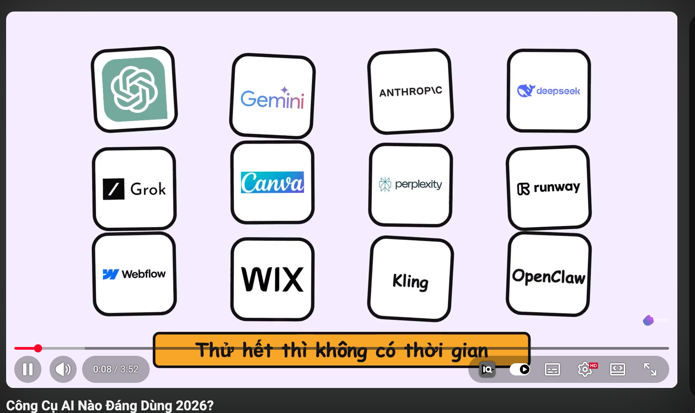
Các công cụ được đặt trong từng ô, đường viền vẽ tay và nội dung nhấn nổi bật. Dùng khi trình bày cách hình ảnh hỗ trợ lời kể.
Ảnh được giữ nguyên theo tệp bạn cung cấp. Đây là ảnh chụp video, không phải trình phát.
Chủ đề và người xem mục tiêu.
Tra cứu số liệu, tên nghiên cứu và mốc thời gian trước khi viết. Ghi thời điểm trên hình với thông tin dễ cũ.
Nội dung có nguồn đối chiếu
“Chúng ta kiểm tra thông tin trước, để câu chuyện đúng ngay từ đầu.”
Ví dụ chủ đề: “Công cụ AI nào dùng cho việc gì?”. Những tên công cụ trong ảnh là minh họa của video bạn cung cấp, không phải bảng xếp hạng được cập nhật tại đây.
Nội dung đã kiểm chứng.
Chia mỗi cảnh thành 1–2 câu nói tự nhiên; gán tên hình và màu nhấn. Mỗi cảnh có mã riêng. Thời lượng tạm sẽ được cập nhật theo giọng thật.
data/ten-video.json
s1 · Mở câu chuyện
voice: câu đọc tiếng Việt
illustration: tên hình của cảnh
durationInSeconds: thời lượng tạm
“Kịch bản là bảng chỉ dẫn: cảnh nào nói gì và dùng hình nào.”
{
"title": "Tên video",
"scenes": [{
"id": "s1",
"type": "image",
"illustration": "ten-hinh-da-dang-ky",
"voice": "Lời đọc đã duyệt.",
"durationInSeconds": 5
}]
}Đây là cấu trúc minh họa. Tên hình phải tồn tại trong dự án; không dán nguyên tên minh họa để render.
Kịch bản và mô tả hình từng cảnh.
Vẽ bộ hình mới theo chủ đề: nét đen dày, màu phẳng, hình dễ hiểu. Đặt nhãn cạnh đối tượng, thêm mũi tên hoặc vòng nhấn vào chi tiết đang nói.
Bộ hình SVG đã đăng ký
Tham khảo cách chia nhóm, đường viền và thông tin trực tiếp trên hình.
“Hình phải giải thích đúng điều đang kể; chữ nằm cạnh chi tiết cần nhìn.”
Đọc hướng dẫn hình minh họa ↗. Skill yêu cầu bộ hình riêng cho video mới, thường 9–12 hình. Không dùng phụ đề tách rời ở đáy: bản hiện tại dùng nhãn trên hình.
Kịch bản và cấu hình Gemini trên máy.
Sinh MP3 cho từng cảnh. Script đo độ dài âm thanh, ghi voiceFile và thời lượng thực vào JSON. Nghe lại phát âm trước khi dựng.
MP3 từng cảnh + JSON cập nhật
“Giọng dài bao nhiêu thì cảnh chạy bấy nhiêu; script tự cập nhật thời gian.”
node scripts/generate-voice-gemini.mjs data/ten-video.json
MP3 nằm trong public/assets/voice/. Chạy lại phần còn thiếu bằng --skip-existing. Cần cấu hình API trước; hạn mức kiểm tra theo tài khoản đang dùng.
JSON đã có voiceFile, hình SVG và nhạc nếu có.
Script đọc JSON, ghép cảnh và giọng đọc rồi xuất MP4. Theo skill này, render trực tiếp bằng script của template để thời lượng được tính đúng.
out/ten-video.mp4
“Remotion là máy dựng: nhận nguyên liệu rồi làm thành video có hình chuyển động và tiếng.”
node scripts/render-from-script.mjs data/ten-video.json out/ten-video.mp4 StoryVideo
StoryVideo mặc định ngang 1920×1080. Template còn có DoodleVideo và MainVideo dọc; chọn composition theo nội dung. Nhạc chỉ thêm khi có tệp sử dụng phù hợp.
MP4 đã dựng và kịch bản gốc.
Nghe toàn bộ video; trích khung hình để kiểm tra nhãn, số liệu và hình có khớp lời. Sửa lỗi rồi render lại. Xác nhận có cả hình, tiếng và đúng độ dài.
MP4 đã duyệt
□ Có hình & âm thanh
□ Nhãn không tràn mép
□ Hình khớp lời đọc
□ Số liệu đúng nguồn & thời điểm
“Bước cuối là xem và nghe lại, vì xuất được tệp chưa có nghĩa là video đã đúng.”
ffprobe -v error -show_entries stream=codec_type -show_entries format=duration -of default=noprint_wrappers=1 out/ten-video.mp4
Phải có cả codec_type=video và codec_type=audio.
Skill đã có template, schema và script; chỉ một tệp JSON bên ngoài template thì không tự tạo được video.
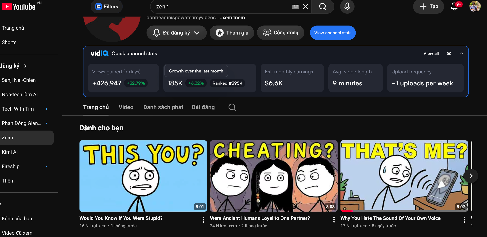
Ảnh bạn cung cấp gợi ý cách trình bày chủ đề bằng nhân vật que, nét viền đậm và chữ ngắn dễ đọc. Dùng để tham khảo hình thức kể chuyện; ảnh không xác nhận kênh sử dụng Remotion.
Dùng trang HTML làm cảnh chuyển động, chụp từng khung hình rồi ghép thành MP4. Quy trình theo skill video-quangcao-hpb.
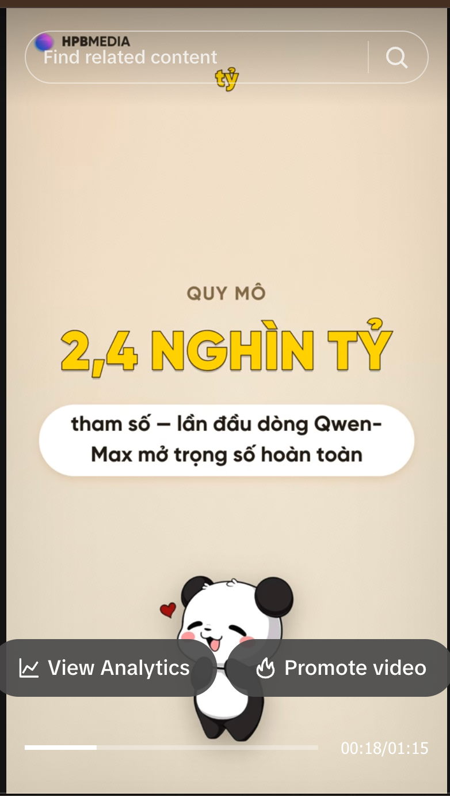
Thứ bậc rõ: chủ đề → con số nổi bật → giải thích → nhân vật. Ảnh tham khảo do bạn gửi; không dùng số liệu trong ảnh như thông tin đã kiểm chứng.
Ảnh video dọc bạn cung cấp, thuộc cách làm video từ trang HTML.
Video bạn cung cấp. Nếu TikTok không phát trong trang cục bộ, mở trực tiếp trên TikTok ↗.
Một trang HTML có thể hiển thị chữ, hình và hiệu ứng thay đổi theo thời gian. Công cụ mở trang trong Chrome, lấy hình ở từng thời điểm rồi dùng FFmpeg ghép thành video. Skill này đã có mẫu quảng cáo và script tự động hóa cả phần hình lẫn âm thanh.
“Hãy coi trang HTML là một sân khấu chuyển động. Chúng ta chụp lại sân khấu liên tục, ghép các hình thành video và thêm giọng đọc. Muốn đổi nội dung quảng cáo thì đổi cấu hình, rồi chạy lại.”
Dịch vụ/ngành quảng cáo; mức giá nếu cần hiện.
Chốt nội dung, người xem và lời kêu gọi hành động. Dùng thông tin thực tế của khách, xác nhận nội dung thương hiệu theo tài liệu skill.
Thông tin để viết config
“Chúng ta đưa thông tin quảng cáo; Claude chuyển thành nội dung cho mẫu video.”
Đọc references/noi-dung.md trong skill trước khi viết nội dung quảng cáo. Giá và thông tin liên hệ phải lấy từ thông tin đã được duyệt.
Yêu cầu đã chốt và config-example.json.
Điền tiêu đề, ô nội dung, mức giá, màu thương hiệu và các câu đọc. Config chọn nội dung; mẫu HTML đã chứa bố cục và hiệu ứng.
video.json
content · chữ, giá, lời kêu gọi
theme · màu thương hiệu
voiceover · lời đọc & mốc bắt đầu
output · tên tệp
“Đổi nội dung trong một cấu hình, mẫu video sẽ dùng nội dung mới.”
Chép assets/config-example.json và sửa. price_value là số nguyên; đặt 0 khi không muốn hiện giá. output.name không dấu, không khoảng trắng.
Config và template đi kèm skill.
Script tạo dự án từ mẫu. HTML bố trí nội dung; CSS tạo hình thức; JavaScript điều khiển chữ gõ, giá chạy và hiệu ứng theo thời gian.
Trang HTML có chuyển động
“Trang web ở đây chính là sân khấu. Chữ và hình thay đổi theo thời gian để tạo cảnh video.”
Các tệp mẫu: assets/template/index.html, style.css, script.js. Muốn đổi bố cục sâu hơn phải sửa template; đổi thời lượng cần điều chỉnh lịch hiệu ứng trong build_video.py.
Dự án HTML đã điền nội dung.
Chụp ảnh ở 4,6 giây; 9,5 giây; 13,5 giây. Mở ảnh kiểm tra tiêu đề, ô nội dung và lời kêu gọi hành động trước khi dựng toàn bộ.
3 ảnh PNG để duyệt
“Chúng ta duyệt ba thời điểm quan trọng trước, để phát hiện chữ tràn hoặc bị cắt.”
python3 ~/.claude/skills/video-quangcao-hpb/scripts/build_video.py \ --config /tmp/video.json --out ~/Desktop/video-demo \ --preview 4.6,9.5,13.5
Ảnh xuất vào output/preview/ trong thư mục dự án.
Bố cục đã duyệt và lời đọc có mốc thời gian.
Dựng các khung hình của trang rồi mã hóa video. Script tạo giọng đọc bằng say trên macOS, tạo nhạc/SFX và ghép tiếng vào video.
MP4 dọc có âm thanh
“Mỗi giây gồm 30 hình. Mẫu 15 giây có 450 hình; ghép hình và tiếng là có video.”
python3 ~/.claude/skills/video-quangcao-hpb/scripts/build_video.py \ --config /tmp/video.json --out ~/Desktop/video-demo
Mặc định theo skill: 1080×1920, 30 fps, 15 giây. Giọng mặc định là macOS say; có thể thay nguồn âm thanh theo hướng dẫn skill.
output/<name>-final.mp4.
Xem trên kích thước điện thoại và nghe lại tên riêng, chữ viết tắt, số điện thoại. Nếu câu đọc bị ép nhanh, rút ngắn câu rồi dựng lại.
Video sẵn sàng sử dụng
□ Chữ đọc được trên điện thoại
□ Thông tin & giá đúng
□ Câu đọc không chồng nhau
□ Có tiếng và đúng 15 giây
“Chúng ta nghe và xem lại bản cuối, đặc biệt là số điện thoại và những từ viết tắt.”
Video có tiếng xuất tại output/<name>-final.mp4. Sửa nội dung hoặc lời đọc trong config rồi chạy lại; không cần dựng tay từ đầu.
Ba hình tĩnh → ba cảnh → một tệp MP4. Clip 12 giây này được ghép bằng FFmpeg, chưa có giọng đọc và không phải sản phẩm xuất từ template video-quangcao-hpb.
Theo skill: macOS có lệnh say, Google Chrome, FFmpeg, Node.js, Python 3 và numpy. Tải đúng thư mục skill, đọc hướng dẫn phụ thuộc rồi chạy script trong môi trường đã chuẩn bị.
HTML = bố cục; CSS = hình thức; JavaScript = chuyển động; JSON = dữ liệu; FFmpeg = công cụ ghép và xuất video.
Claude hỗ trợ viết hiệu ứng → Remotion hoặc HTML xuất đoạn hiệu ứng → bạn nhập vào CapCut để ghép với video, lời đọc và nhạc.
Biến yêu cầu thành chuyển động, đồ họa và bố cục của một đoạn minh họa.
Chạy hiệu ứng và tạo tệp video để đưa sang phần mềm dựng.
Cắt cảnh, xếp lớp, thêm phụ đề, lời đọc, nhạc và xuất bản cuối.
Quyết định hiệu ứng dùng ở đâu, kiểm tra nội dung và nhịp dựng.
“Claude giúp chúng ta làm một đoạn hiệu ứng riêng, chẳng hạn bản đồ có các đường nối chuyển động. Xuất đoạn đó thành tệp, rồi đưa vào CapCut để ghép với người nói, video gốc và âm thanh. CapCut là nơi ráp các nguyên liệu thành video hoàn chỉnh.”
Ba ví dụ dưới đây giúp phân biệt tệp chữ theo thời gian, hiệu ứng nền trong suốt và một cảnh bản đồ hoàn chỉnh.
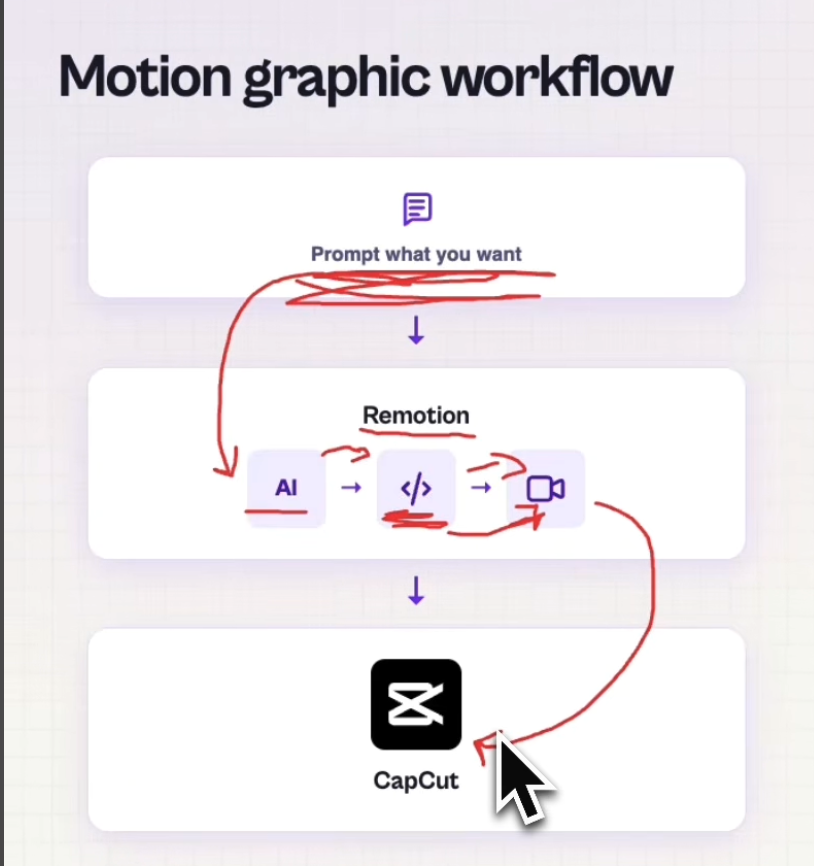
Mô tả hiệu ứng → AI viết mã → Remotion dựng đoạn hiệu ứng → đưa sang CapCut để ghép.
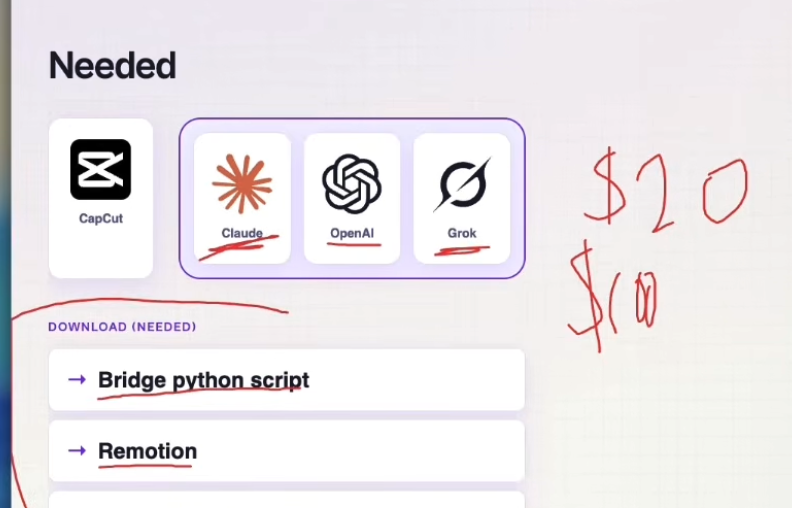
Ảnh bạn gửi liệt kê CapCut, trợ lý AI, Remotion và bridge Python script. Danh sách này thuộc hướng dẫn trong ảnh; không phải mọi cách ghép hiệu ứng đều cần bridge script.
Dùng để nhấn mạnh một con số trong video. Sau khi nhập tệp, chỉnh font, màu và vị trí chữ trong CapCut.
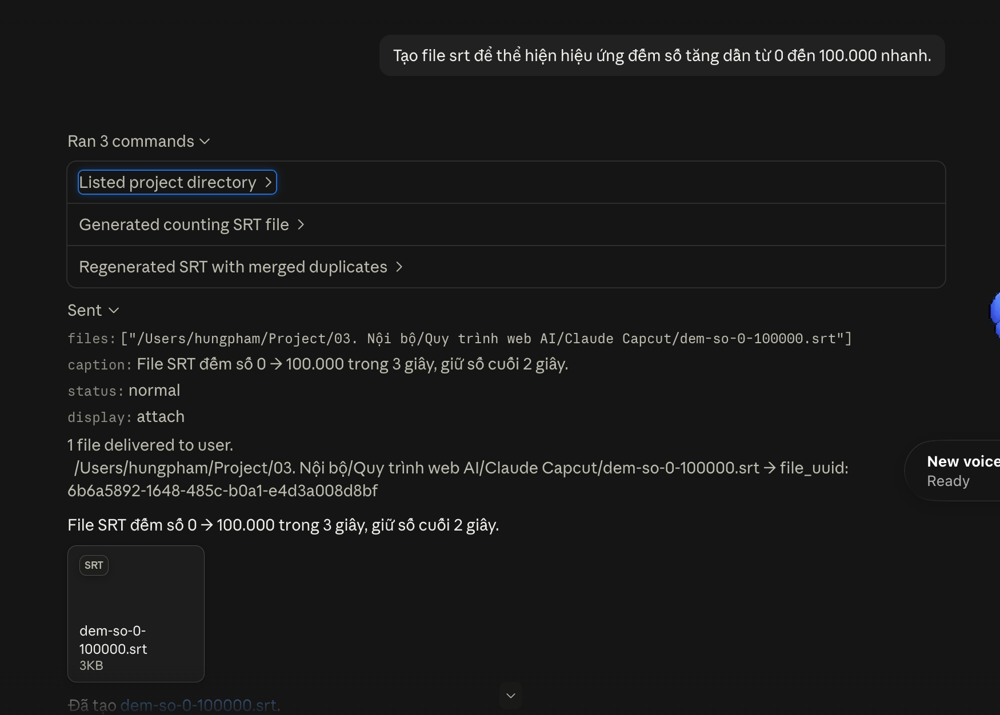
Ảnh chụp yêu cầu tạo số tăng từ 0 đến 100.000. Tệp SRT chứa các số theo mốc thời gian để nhập vào phần phụ đề trong CapCut.
Xem chuyển động trong Remotion → xuất tệp hiệu ứng → nhập vào CapCut và xếp lên trên video gốc. Kiểm tra vùng quanh đồng xu còn trong suốt khi ghép.
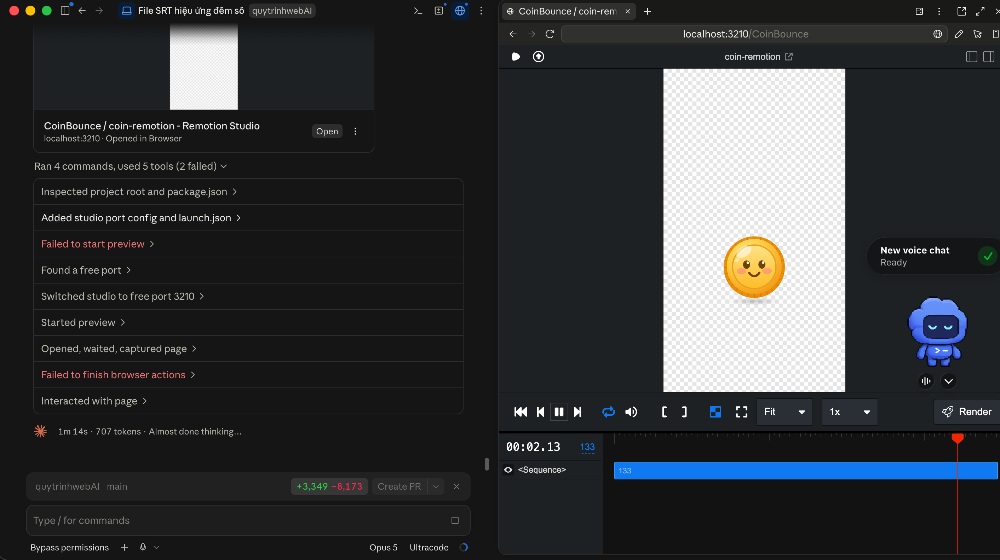
Nền ô caro trong bản xem trước minh họa vùng trong suốt quanh đồng xu.
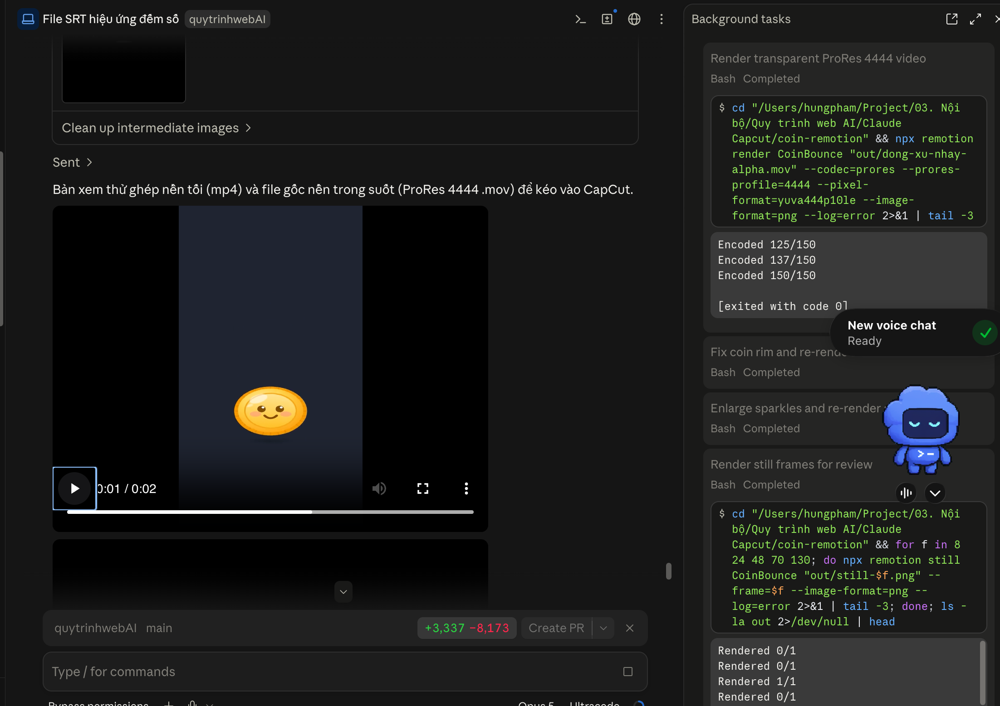
Ảnh chụp bản xem thử và bước xuất tệp nền trong suốt để ghép với video gốc.
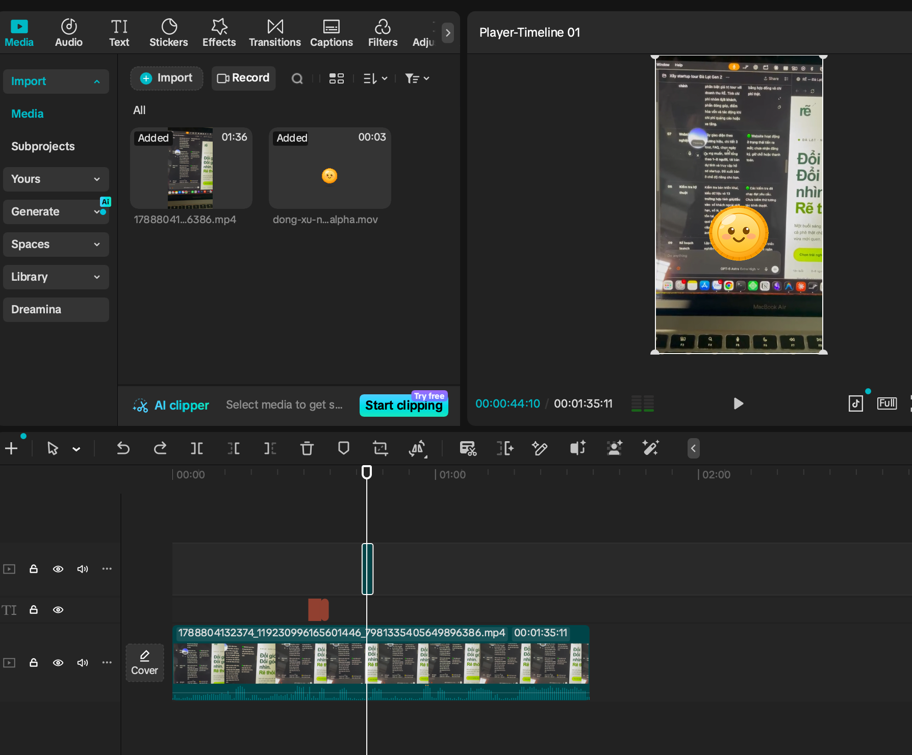
Nhập video gốc và tệp hiệu ứng, đặt hiệu ứng ở lớp phía trên rồi chỉnh thời điểm, vị trí và kích thước.
Dùng như một cảnh minh họa trong video: mở toàn cảnh để thấy các đường nối, sau đó cận cảnh vùng cần nhấn mạnh.
Trước khi chạy, bổ sung thời lượng, tỉ lệ ngang hoặc dọc và tệp bản đồ tham chiếu. Khi duyệt, kiểm tra vị trí, nhãn địa danh và thời điểm phát sáng.
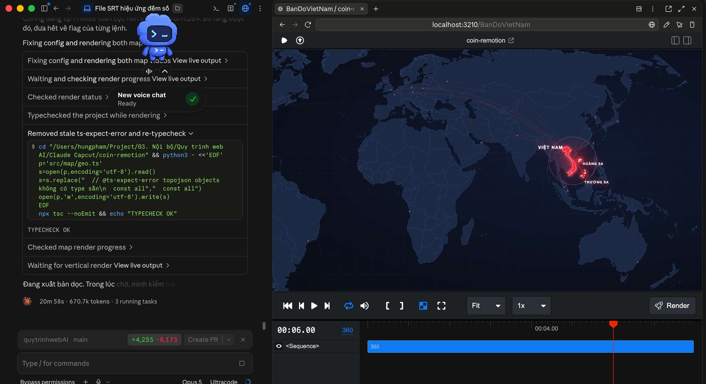
Ảnh chụp Remotion Studio: đường đỏ từ nhiều vị trí trên bản đồ hội tụ về Việt Nam.
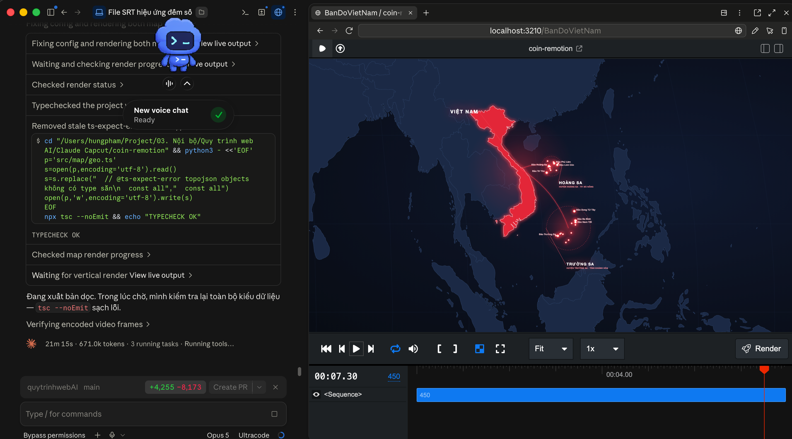
Ảnh chụp kết quả hiển thị Việt Nam cùng nhãn Hoàng Sa và Trường Sa theo yêu cầu minh họa bạn cung cấp.
Đưa vào CapCut: nhập đoạn bản đồ đã xuất, đặt vào vị trí cần minh họa trên timeline, căn theo lời đọc rồi ghép nhạc và các cảnh còn lại.
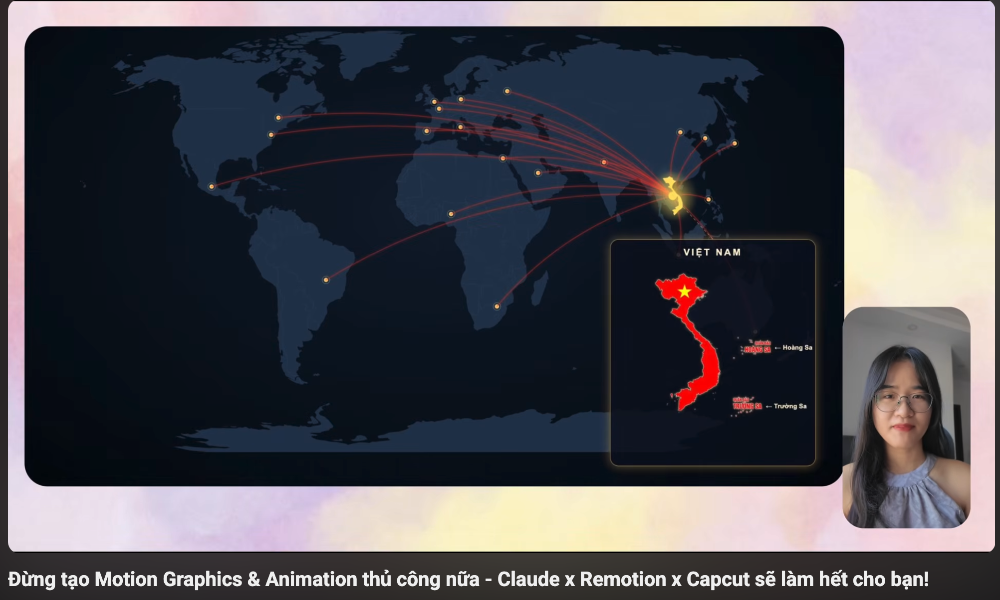
Ảnh cho thấy bản đồ, đường nối, khung thông tin và người trình bày. Khi dựng, có thể chuẩn bị đoạn đồ họa riêng rồi ghép với người nói trong CapCut.
Ảnh dùng để giải thích bố cục; các lớp bên dưới là sơ đồ hướng dẫn, không phải ảnh chụp dự án CapCut của tác giả.
Đoạn đồ họa chiếm toàn khung, ví dụ bản đồ hoặc biểu đồ. Lời đọc vẫn có thể chạy bên dưới.
Hiệu ứng xuất hiện cùng video gốc: nhãn, số liệu, mũi tên hoặc khung thông tin.
Video gốc, lời đọc và ý tưởng hiệu ứng.
Xác định hiệu ứng xuất hiện ở câu nào, dài bao lâu và để giải thích điều gì. Chốt khung hình, màu và vùng cần chừa cho người nói hoặc phụ đề.
Yêu cầu hiệu ứng rõ ràng
“Ví dụ khi nói về kết nối, ta cần một đoạn bản đồ có đường nối để người xem hình dung.”
Ví dụ yêu cầu: đoạn bản đồ 6 giây, 1920×1080, đường nối xuất hiện lần lượt, chừa góc phải cho người nói. Thời lượng này chỉ là ví dụ để thực hành.
Yêu cầu và tài nguyên đã chuẩn bị.
Nhờ Claude tạo mã cho một đoạn đồ họa: đường nối, số tăng, chữ xuất hiện hoặc khung thông tin. Chạy trong dự án Remotion hoặc môi trường HTML phù hợp.
Dự án hiệu ứng riêng
“Claude giúp tạo đoạn hiệu ứng ở bên ngoài. CapCut sẽ nhận tệp xuất ra để ghép sau.”
Remotion phù hợp khi đã có dự án React dựng video. Với HTML, cần bước ghi/render trang thành video. CapCut không đọc trực tiếp mã React hoặc HTML để biến thành clip.
Đoạn hiệu ứng đã xem thử.
Xuất clip để chèn nguyên cảnh hoặc clip nền xanh để chồng lên hình khác. Nếu dùng nền trong suốt, thử định dạng alpha với CapCut đang cài trước khi dựng dài.
Tệp hiệu ứng nhập được
“Chúng ta cần tệp video thật, giống một nguyên liệu dựng phim, để đưa vào CapCut.”
MP4 H.264 thông thường có nền, không mang độ trong suốt. Remotion có thể xuất WebM alpha hoặc ProRes 4444; khả năng giữ alpha khi nhập CapCut cần thử trên phiên bản thực tế. Nếu không giữ nền trong, dùng clip nền xanh và Chroma Key.
Video gốc và tệp hiệu ứng.
Tạo dự án, nhập các tệp. Đặt video gốc vào dòng thời gian. Chèn hiệu ứng giữa hai cảnh hoặc kéo lên lớp phía trên để phủ vào đúng đoạn cần minh họa.
Bản ghép có hiệu ứng
“CapCut là bàn dựng: ta đặt hiệu ứng vào đúng chỗ trong video chính.”
Trên máy tính, đưa clip phủ lên track phía trên video gốc. Nếu dùng điện thoại, tìm mục Overlay/Lớp phủ. Điều chỉnh kích thước, vị trí và độ dài. Tên nút có thể khác theo ngôn ngữ và phiên bản.
Bản ghép và lời đọc/nhạc.
Với nền xanh, dùng Chroma Key chọn màu nền rồi tinh chỉnh để giữ viền hiệu ứng. Căn thời điểm theo lời nói, thêm phụ đề nếu cần và giảm nhạc để nghe rõ giọng.
Bản xem trước hoàn chỉnh
□ Xuất hiện đúng câu nói
□ Không che mặt hoặc chữ
□ Nền đã xử lý sạch
□ Nhạc không lấn giọng
“Lúc này mới căn nhịp, thêm tiếng và chỉnh lớp phủ cho hòa vào video.”
Với clip nền xanh: chọn clip → phần Video → Remove BG/Cutout → Chroma Key, chọn màu rồi chỉnh mức loại bỏ. Tránh dùng màu nền trùng với chi tiết muốn giữ.
Video đã duyệt.
Chọn độ phân giải, khung hình và fps phù hợp dự án. Xuất bản cuối, xem và nghe lại. Lưu cả dự án CapCut lẫn mã/tệp hiệu ứng để sửa hoặc dùng tiếp.
Video hoàn chỉnh + bộ nguyên liệu
“Một đoạn hiệu ứng có thể dùng lại. Đổi thiết kế thì sửa nguồn; đổi vị trí thì chỉnh trong CapCut.”
9:16 thường dùng cho Reels/Shorts; 16:9 cho video ngang. Chọn theo nơi đăng và footage. Không tăng fps tùy ý nếu các nguyên liệu không phù hợp.
Điền thông tin thực tế rồi gửi cùng tài nguyên cần dùng:
Hướng dẫn được tổng hợp từ tài liệu chính thức và cách làm bạn mô tả. Chưa truy xuất được toàn bộ nội dung YouTube để đối chiếu từng thao tác; đây không phải bản chép lại video.
Chuẩn bị câu chuyện và nhân vật, tạo từng clip ngắn, chọn bản tốt rồi nối lại. Tools giúp đóng gói việc lặp lại thành một app nhỏ.
“Flow giống một xưởng làm phim AI: có nơi chuẩn bị hình, lưu nhân vật, tạo clip và ghép cảnh. Để làm một video dài hơn, chúng ta tạo nhiều đoạn ngắn theo cùng kịch bản, rồi ráp lại thành câu chuyện.”
Chuẩn bị hình tham khảo, nhân vật và bố cục trước khi tạo chuyển động.
Các clip đã tạo hoặc tải lên; chọn clip để xem và chỉnh.
Hồ sơ hình ảnh và giọng có thể dùng lại qua nhiều lần tạo.
Nơi sắp các clip thành chuỗi, cắt phần thừa và xem liên tục.
App nhỏ cho một việc lặp lại: xử lý hình, tạo biến thể hoặc hỗ trợ quy trình.
Trợ lý hội thoại giúp phát triển ý tưởng và điều phối công việc sáng tạo.
Flow là không gian làm việc; tên như Veo, Omni hoặc Nano Banana trong bộ chọn là các model bên trong. Tính năng tùy model, khu vực và tài khoản — xem bảng hỗ trợ hiện hành ↗.
Ý tưởng, người xem, khung hình.
Viết danh sách cảnh, mỗi cảnh một hành động chính. Agent có thể hỗ trợ lên ý tưởng và chỉnh yêu cầu.
Bảng cảnh để thực hiện
“Ta chia phim thành những đoạn nhỏ trước, rồi mới tạo từng đoạn.”
Ví dụ: mèo thức dậy → nhìn món đồ chơi → tiến đến → chơi → kết thúc. Chưa cần tạo tất cả clip cùng lúc.
Mô tả ngoại hình và ảnh tham khảo.
Mở Nhân vật, tạo mới bằng mô tả hoặc ảnh. Đặt tên, bổ sung thông tin và giọng khi cần; lưu để dùng lại.
Hồ sơ nhân vật chung
“Mọi cảnh đều dùng cùng hồ sơ để giữ nhận diện nhân vật.”
Ví dụ tự soạn: “Mèo Mít, lông cam sọc nhạt, mắt xanh, vòng cổ xanh dương”. Sau mỗi lần tạo, kiểm tra các đặc điểm đó.
Nhân vật đã chốt và bảng cảnh.
Chuẩn bị hình thể hiện bố cục từng cảnh. Dùng lại mô tả nhân vật, bối cảnh và ánh sáng để giảm thay đổi ngoài ý muốn.
Ảnh tham khảo cho các cảnh
“Ảnh cảnh giống bản phác thảo: ta biết nhân vật đứng đâu trước khi cho chuyển động.”
Ví dụ: ảnh mở đầu ở cửa sổ; ảnh tiếp theo vẫn căn phòng ấy nhưng máy quay gần món đồ chơi. Duyệt hình trước khi tạo chuyển động.
Hình cảnh và mô tả hành động.
Chọn chế độ tạo có trên tài khoản; gắn tham chiếu rồi mô tả một hành động, máy quay và âm thanh mong muốn. Chọn bản tốt, đánh số clip.
Các clip đã chọn
“Mỗi lần tạo giải quyết một cảnh; chưa phải cả bộ phim.”
Độ dài và tính năng tùy model. Xem thiết lập trước khi tạo, không mặc định mọi clip đều 8 giây. Đừng đổi ngoại hình nhân vật trong yêu cầu cảnh tiếp theo.
Các clip đã duyệt.
Dùng Add to Scene, sắp thứ tự và cắt đầu/cuối. Extend dùng để tiếp tục một clip Veo khi được hỗ trợ; không đồng nghĩa ghép các cảnh độc lập.
Chuỗi cảnh xem liền mạch
“Ghép là xếp những đoạn đã có; Extend là tạo thêm phần tiếp diễn.”
Có thể lưu khung cuối làm tham chiếu cho cảnh mới. Nếu cần dựng âm thanh, phụ đề hoặc nhiều lớp hơn, tải clip về CapCut để hoàn thiện.
Chuỗi cảnh đã ghép.
Xem toàn bộ để tìm lỗi nhân vật, chuyển cảnh và âm thanh. Chỉnh đoạn cần thiết; tải cảnh xuống và duyệt tệp cuối trước khi đăng.
Video hoàn chỉnh
□ Đúng thứ tự sự kiện
□ Nhân vật không đổi bất thường
□ Không lặp hoặc giật ở mối nối
□ Tiếng liền mạch, chữ dễ đọc
“Chúng ta duyệt cả câu chuyện, không chỉ xem từng clip đẹp riêng lẻ.”
Ví dụ lỗi: mèo ở bên trái cuối cảnh 1 nhưng đột ngột nhảy sang phải đầu cảnh 2. Sửa bố cục hoặc thêm cảnh trung gian để người xem hiểu.
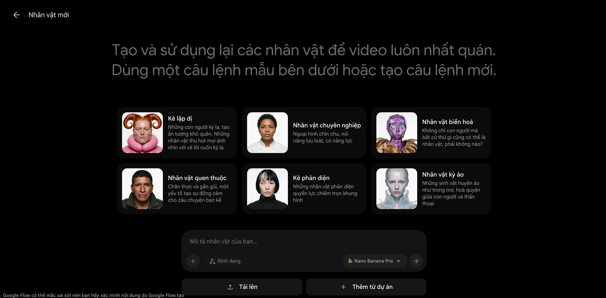
Trong ảnh: chọn mẫu gợi ý, mô tả nhân vật, tải ảnh hoặc thêm ảnh từ dự án. Mẫu là điểm khởi đầu; hãy chốt thiết kế trước khi làm nhiều cảnh.
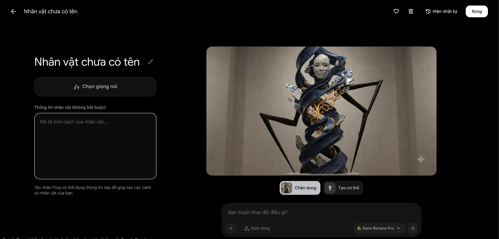
Trong ảnh: đặt tên, chọn giọng, ghi tính cách; có lựa chọn chân dung và tạo cơ thể. Nút Xong dùng để kết thúc chỉnh sửa.
“Mèo Mít: lông cam sọc nhạt, mắt xanh, vòng cổ xanh dương; tò mò, nhanh nhẹn. Giữ các đặc điểm này trong mọi cảnh. Bối cảnh chính: căn phòng sáng sớm, ánh sáng ấm.”
Dùng lại hồ sơ hỗ trợ tính nhất quán; vẫn kiểm tra kết quả từng cảnh. Google: quản lý nhân vật và tài nguyên ↗.
Đây là bảng cảnh mẫu để thực hành, không phải video đã tạo. Thời lượng dưới đây là thời gian dự kiến giữ lại sau khi cắt.
Mèo mở mắt bên cửa sổ
Mèo nhìn thấy quả bóng
Mèo đi lại gần quả bóng
Mèo đẩy bóng lăn
Mèo nằm cạnh món đồ chơi
5 × 6 giây ≈ 30 giây. Tổng thời gian thực tế thay đổi khi cắt hoặc cho chuyển cảnh chồng lên nhau.
Dùng khi đổi góc nhìn hoặc sang sự kiện mới. Tạo các clip theo bảng cảnh rồi đưa vào Scenebuilder.
Dùng Extend nếu clip và model hỗ trợ, ví dụ mèo tiếp tục đi. Mô tả điều xảy ra tiếp theo.
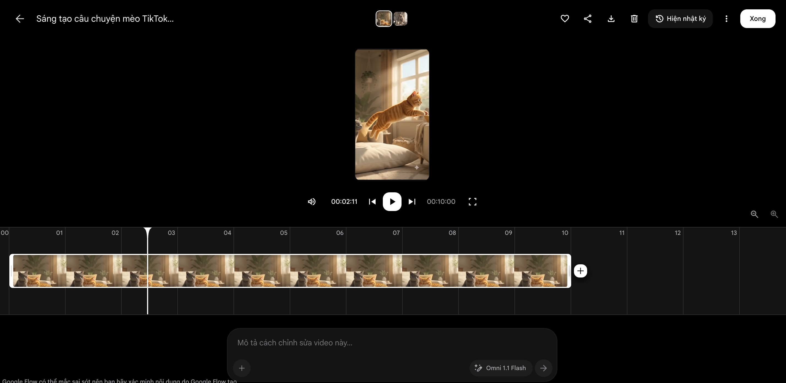
Trong ảnh: vùng xem trước ở giữa; nút phát bên dưới; dải hình là dòng thời gian; vạch trắng là vị trí đang xem. Dấu + cạnh clip là vị trí thêm nội dung trong giao diện này. Ô phía dưới nhận yêu cầu chỉnh sửa.
Có thể đổi thứ tự, cắt clip, lưu khung hình và tải cảnh. Nhật ký lưu các phiên bản chỉnh sửa. Google: chỉnh video và ghép cảnh ↗.
Tools là công cụ có giao diện riêng, tạo từ yêu cầu bằng ngôn ngữ tự nhiên. Bạn có thể dùng mẫu, công cụ cộng đồng hoặc tạo công cụ của mình.
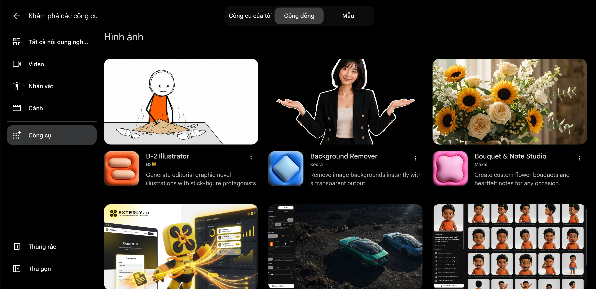
Ảnh có ba nhóm: Công cụ của tôi, Cộng đồng và Mẫu. Các ví dụ hiển thị gồm minh họa, xóa nền và tạo bộ hình nhân vật. Đọc mô tả để chọn đúng việc cần làm.
“Tạo công cụ lập kế hoạch video: nhập ý tưởng, tên nhân vật và độ dài mong muốn; trả về bảng cảnh gồm hành động, hình tham khảo, yêu cầu tạo clip và trạng thái đã duyệt. Cho phép sửa từng dòng trước khi dùng.”
Đây là yêu cầu mẫu để bạn tự tạo Tool trong Flow; trang hướng dẫn này chưa tạo app trong tài khoản của bạn. Nên bắt đầu với lập bảng cảnh, rồi thử từng khả năng tạo ảnh/video mà Tool hỗ trợ.
Tools hiện được hướng dẫn cho web/máy tính. Tạo media qua Tool có thể dùng credit; kiểm tra thông báo trước khi chạy. Google: tạo và quản lý Tools ↗.
Hoàn thiện trong Flow khi cần một chuỗi cảnh đơn giản. Tải các clip đã chọn sang CapCut nếu muốn kiểm soát nhiều lớp video, nhạc, lời đọc và phụ đề chi tiết.
Đặt tên tệp 01-mo-dau, 02-phat-hien… để không nhầm thứ tự. Dùng chung tỉ lệ khung hình từ đầu, nghe lại điểm nối âm thanh và tránh lặp cùng một hành động ở hai cảnh liên tiếp.
Hướng dẫn dựa trên bốn ảnh bạn gửi và tài liệu chính thức Google. Chưa truy xuất được toàn bộ nội dung YouTube để đối chiếu từng thao tác. Tên model trên ảnh là tại thời điểm chụp, không phải cam kết mọi tài khoản có cùng lựa chọn.
Kiểm tra giá, credit và độ dài trong tài khoản trước khi tạo hàng loạt; thử một cảnh đạt yêu cầu rồi mới làm tiếp.
Đã có repository để gửi yêu cầu tạo video bằng code, quản lý hàng đợi và theo dõi kết quả. Khả năng dùng miễn phí đang cần thử và đối chiếu theo tài khoản.
“Seedance là model tạo video. Dola là dịch vụ mà code này làm việc cùng. Gateway là cầu nối: nhận yêu cầu, giao cho phiên trình duyệt, theo dõi và trả lại link video. Có code không đồng nghĩa có quyền tạo video miễn phí không giới hạn.”
Tích hợp vào script hoặc quy trình nội bộ thay vì nhập thủ công từng prompt.
Dashboard hiển thị trạng thái, hàng đợi, tài khoản và quản lý API key.
Đo khả năng tạo clip, thời lượng và chi phí/điểm thực tế trước khi đưa vào sản xuất.
Gateway điều phối phiên và tác vụ, không cài hay chạy trọng số Seedance trên máy. “OpenAI-compatible” trong README mô tả kiểu API, không có nghĩa đây là dịch vụ của OpenAI.
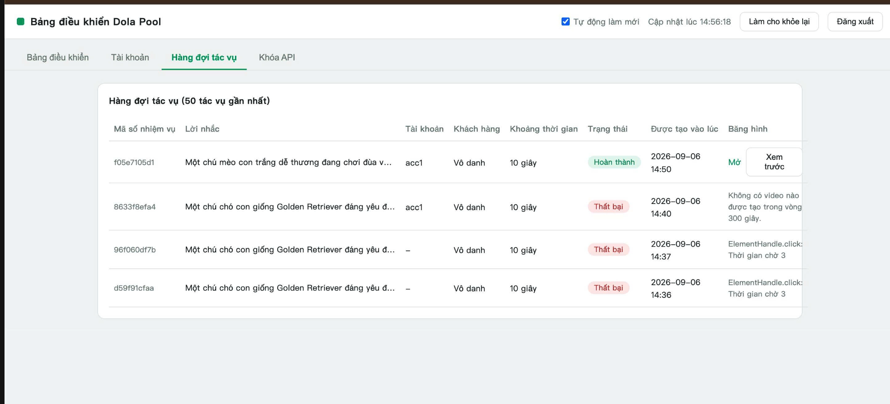
Ảnh cho thấy hàng đợi có tác vụ hoàn thành và tác vụ thất bại. Khi trình bày, chỉ vào trạng thái để giải thích lúc nào có thể mở kết quả và lúc nào cần đọc lỗi.
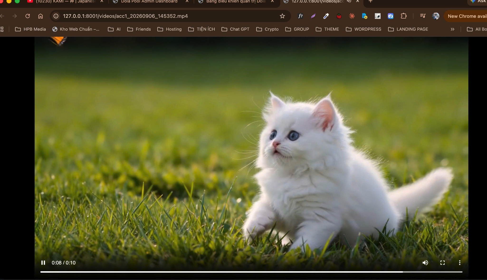
Ảnh chụp trình phát MP4 cục bộ, hiển thị video mèo trắng dài 10 giây. Đây là ví dụ bước mở và kiểm tra kết quả sau khi tác vụ hoàn thành.
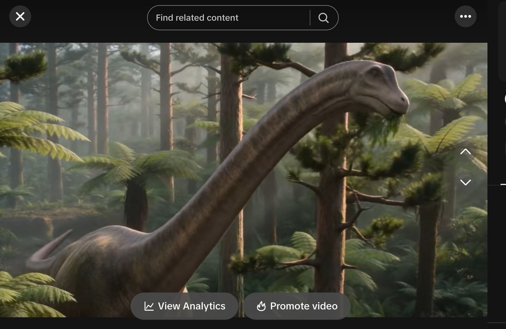
Ảnh bạn cung cấp minh họa một cảnh khủng long. Có thể dùng để giải thích việc tạo các cảnh theo chủ đề rồi chọn và ghép thành video.
Các hình trên là ảnh chụp, không phải trình phát video. Ảnh kết quả không xác nhận chi phí hoặc số lượt miễn phí của tài khoản.
Ý tưởng và tài nguyên tham khảo.
Viết một cảnh ngắn, một hành động chính. Chọn tỉ lệ và thời lượng để thử trước khi lên kế hoạch nhiều cảnh.
Prompt thử nghiệm
“Trước hết thử một cảnh để biết tài khoản và đường chạy có hoạt động không.”
Ví dụ: sản phẩm trên bàn, máy quay tiến gần, ánh sáng mềm. Giữ cùng nhân vật/sản phẩm và phong cách nếu định ghép nhiều cảnh.
Mã nguồn, môi trường chạy và cấu hình mạng.
Cài phụ thuộc theo README. Kiểm tra cấu hình proxy của repo; chuẩn bị phiên Dola hợp lệ và khóa truy cập cho gateway.
Môi trường đã cấu hình
“Gateway là cầu nối chạy trên máy; nó vẫn cần dịch vụ Dola hoạt động ở phía sau.”
README yêu cầu Python 3.11+, Chrome/Chromium và proxy có đầu ra JP/KR. Đây là yêu cầu tác giả ghi trong repo, chưa được kiểm nghiệm trên máy này. Không đưa cookie, mật khẩu hoặc mã khôi phục vào tài liệu trình chiếu.
Gateway đã cấu hình, tài khoản sẵn sàng.
Chạy server cục bộ, mở /web để kiểm tra tài khoản và tác vụ. /health dùng kiểm tra dịch vụ; server đang chạy chưa chứng minh phiên Dola tạo được video.
Gateway sẵn sàng thử
“Dashboard giúp biết công việc đang ở đâu; không phải nơi tự sinh ra model.”
uvicorn server:app --host 127.0.0.1 --port 8000
Dashboard: http://127.0.0.1:8000/web. DOLA_API_KEYS bảo vệ API khách; DOLA_ADMIN_KEY bảo vệ phần quản trị. Tài khoản trong pool phải còn phiên hợp lệ.
Prompt, thời lượng, tỉ lệ và ảnh nếu cần.
Gửi JSON tới API. Lưu id trả về để theo dõi. Đây là yêu cầu bất đồng bộ: queued nghĩa là được xếp hàng, chưa có video.
Mã tác vụ video_…
“Gửi lệnh xong chúng ta nhận mã phiếu, chưa nhận ngay video.”
Code nhận model seedance-2.0 hoặc seedance-2.5; duration là số 10, 15 hoặc 30; tỉ lệ dùng trường ratio. Việc API chấp nhận không đảm bảo Dola/tài khoản thực hiện được mọi lựa chọn.
Mã tác vụ và cùng khóa API.
Kiểm tra trạng thái theo chu kỳ phù hợp. completed thì đọc video_url; failed thì đọc error và tìm nguyên nhân trước khi gửi lại.
Link video hoặc lỗi cụ thể
“Ta chờ phiếu hoàn thành, hoặc xem lỗi để xử lý đúng chỗ.”
401: sai khóa. 422: yêu cầu không hợp lệ hoặc không được phép. 429: hạn mức/điểm/hàng đợi. 503 “no account in pool”: chưa có tài khoản. Không gửi lặp liên tục khi chưa biết trạng thái tác vụ cũ.
video_url và video đã tải.
Kiểm tra hình, tiếng, thời lượng và độ nhất quán. Làm các cảnh tiếp theo khi mẫu thử đạt; ghép theo kịch bản và bổ sung âm thanh khi cần.
Video được duyệt + ghi nhận thử nghiệm
“Code giúp tạo từng nguyên liệu; video cuối vẫn cần duyệt và sắp câu chuyện.”
Ghi ngày thử, model, thời lượng, điểm trước/sau, kết quả và lỗi. Nhờ vậy mới đánh giá được khả năng dùng miễn phí thực tế.
Có mã nguồn gateway, pool tài khoản, hàng đợi và API. Code có lỗi riêng khi hết lượt ngày hoặc thiếu điểm.
Nơi nào đang cấp lượt miễn phí, số lượt thực nhận, quyền model và thời lượng, thời điểm làm mới, độ ổn định của phiên.
Chưa có danh sách nền tảng miễn phí đã kiểm chứng trong mục này. Không quy đổi số tài khoản thành số video miễn phí; điều kiện sử dụng thực tế phải được xác nhận riêng.
Chỉ là mẫu để đọc và triển khai sau khi gateway đã chạy; trang này không gửi tác vụ.
POST /v1/videos/generations
Authorization: Bearer <API_KEY_GATEWAY>
Content-Type: application/json
{
"model": "seedance-2.0",
"prompt": "A product on a table, soft light, slow camera push-in",
"ratio": "9:16",
"duration": 10,
"reference_images": []
}Ảnh tham chiếu đi qua bộ kiểm tra URL của server; không điền đường dẫn tệp trên máy vào như một URL công khai.
GET /v1/videos/<id-tra-ve> Authorization: Bearer <API_KEY_GATEWAY> // Các trường cần đọc: // status, video_url, error
API key gateway xác thực người gọi; phiên/cookie Dola là thông tin khác dùng ở phía dịch vụ. Không nhầm hai loại này.
Đã đọc tài liệu và code công khai ngày 07/09/2026; chưa cài gateway, đăng nhập Dola hoặc chạy thử tạo video. README mô tả mục đích học tập và thử nghiệm nội bộ. Những lựa chọn thời lượng mở rộng trong repo chưa được xác minh chạy thành công.
Công cụ sinh video từ văn bản, ảnh động, nhân vật MC ảo (Talking Avatar) và Upscale 4K.
| # | CÔNG CỤ & LINK | NHÃN ĐÁNH GIÁ | ƯU ĐIỂM NỔI BẬT | NHƯỢC ĐIỂM | DEMO SẢN PHẨM |
|---|---|---|---|---|---|
| 1 | Runway Gen-3 Alpha runwayml.com | Chất lượng điện ảnh số 1; kiểm soát chuyển động camera & thời gian chuẩn xác; Text/Image-to-Video đỉnh cao | Bản miễn phí giới hạn credit; cần trả phí để render HD không watermark | ||
| 2 | Kling AI klingai.com | Xuất video Full HD 1080p tới 10 giây; cử động nhân vật cực kỳ tự nhiên; mô phỏng vật lý thế giới thực chân thực | Hàng đợi render vào giờ cao điểm có thể hơi lâu | ||
| 3 | Luma Dream Machine lumalabs.ai | Tốc độ sinh video cực nhanh (khoảng 120s); hiểu chuyển động 3D xuất sắc; cho phép tạo video miễn phí mỗi ngày | Một số chuyển động bàn tay phức tạp đôi khi còn bị biến dạng nhẹ | ||
| 4 | OpenAI Sora openai.com | Mô hình video thế hệ mới hiểu sâu vật lý thế giới thực; duy trì tính nhất quán nhân vật xuyên suốt nhiều góc quay | Đang mở quyền truy cập giới hạn theo giai đoạn | ||
| 5 | Pika 2.0 pika.art | Hiệu ứng Pikaffects độc quyền (tan biến, nổ, đè bẹp, tan chảy); chỉnh sửa vùng chọn trực tiếp (Modify Region) | Thời lượng video cơ bản 3-4 giây; bản free có gắn logo nhỏ | ||
| 6 | HeyGen heygen.com | Tạo MC / Người ảo thuyết trình chân thực 100%; dịch video sang hơn 40 thứ tiếng tự khớp khẩu hình (Auto Lip-sync) | Chuyên về video thuyết trình / bán hàng hơn là phim nghệ thuật; giá bản Pro khá cao | ||
| 7 | Hedra hedra.com | Biến mọi ảnh nhân vật tĩnh thành video ca hát hoặc nói chuyện theo file âm thanh audio tải lên; biểu cảm sống động | Độ dài video tối đa cho mỗi lần tạo khoảng 60 giây | ||
| 8 | Haiper AI haiper.ai | Giao diện đơn giản; cho phép tạo video HD miễn phí hàng ngày; hỗ trợ tính năng Repainting đổi màu chi tiết | Độ dài video giới hạn 4-8 giây | ||
| 9 | D-ID d-id.com | Nền tảng Talking Head kỳ cựu; API tích hợp mạnh mẽ vào chatbot / web động; sinh MC nói nhanh chóng | Cử động phần thân dưới còn tĩnh, tập trung chủ yếu vào khuôn mặt | ||
| 10 | Viggle AI viggle.ai | Thay thế nhân vật trong video có sẵn bằng ảnh bất kỳ (Character Movement Swapping); tạo video meme cực kỳ viral | Chất lượng hình ảnh xuất ra ở mức vừa phải, cần dùng thêm AI Upscaler | ||
| 11 | Topaz Video AI topazlabs.com | Phần mềm Upscale video lên 4K/8K tốt nhất thế giới; tăng mượt 60fps; khử mờ, khử rung và tăng nét chi tiết | Chạy trực tiếp trên máy tính cá nhân, yêu cầu card đồ họa (GPU) mạnh | ||
|
|
Trực quan hoá quy trình 4 bước ở trên, và 3 hướng tiếp cận thường dùng tuỳ mục tiêu sản xuất.
Hook 3s đầu + nội dung giải quyết vấn đề + Call To Action, dài ~60 giây.
Chọn tone giọng truyền cảm hứng, tải file mp3 về.
Vẽ ảnh từng phân cảnh, rồi tạo chuyển động camera mượt mà.
Auto Captions, xuất bản lên TikTok, Reels, Shorts.
Dựng video bằng component React, chuyển động tính theo frame. Sửa timing/bố cục = sửa code, render lại hàng loạt.
Mô tả cảnh bằng lời (prompt) để AI sinh clip khi không có footage thật — dùng làm nguyên liệu thô.
Cắt dựng trực quan, auto-caption, thư viện nhạc/hiệu ứng sẵn có — không cần biết code.
Chọn theo sản phẩm cần làm: ảnh minh họa, banner có chữ hay mockup để trình bày thiết kế.
ChatGPT / Gemini tạo ảnh từ mô tả hoặc chỉnh ảnh có sẵn.
Claude hỗ trợ nội dung; Canva bố trí chữ, logo và hình thành thiết kế.
Claude × Canva hỗ trợ trình bày thiết kế trên màn hình, bao bì hoặc vật thể bằng mockup.
Tạo hình minh họa, ảnh ý tưởng, nền banner hoặc chỉnh ảnh đã có. Kết quả là ảnh; chữ và vật thể trong ảnh không mặc nhiên trở thành các lớp thiết kế riêng.
“Trong các công cụ tôi đã thử, tôi thấy ChatGPT tạo hình đẹp nhất. Cách tôi làm là gửi một ảnh mẫu mình thích, rồi yêu cầu tạo ảnh mới tương tự về phong cách, bố cục và kiểu chữ.”
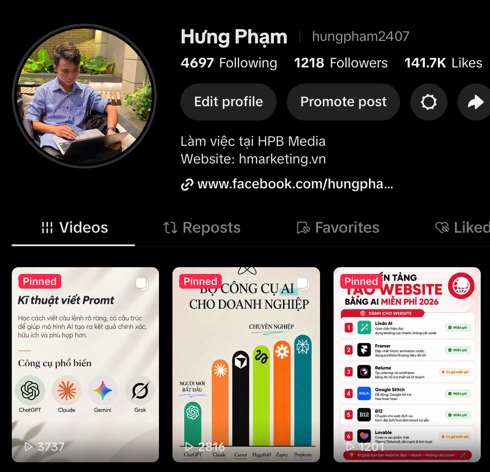
Ảnh bạn cung cấp: các thiết kế trong bài ghim về viết prompt, bộ công cụ AI và nền tảng tạo website. Đây là ví dụ kết quả thực tế của bạn; nhận xét về chất lượng là trải nghiệm cá nhân.
Đính kèm ảnh mẫu cùng nội dung mới. Nếu có logo hoặc ảnh sản phẩm riêng, gửi kèm và ghi rõ vai trò từng tệp.
Bố cục, màu nền, khoảng trắng, vị trí hình và kiểu chữ: có chân/không chân, đậm/mảnh, nghiêng, độ lớn và cách xuống dòng.
Kiểm tra dấu tiếng Việt và nội dung. Yêu cầu sửa cụ thể như “tiêu đề đậm hơn”, “tăng khoảng trắng”, “giữ bố cục, đổi nội dung”.
Ảnh AI có thể mô phỏng kiểu chữ nhưng chưa chắc khớp chính xác font hoặc từng ký tự. Nếu cần đúng font thương hiệu và chữ chỉnh sửa được, hoàn thiện lớp chữ trong Canva.
Chọn ảnh mẫu yêu thích, chuẩn bị nội dung mới và tỉ lệ ảnh cần dùng. Ghi những điểm muốn giữ về bố cục, màu và kiểu chữ.
Đính kèm mẫu, chỉ rõ vai trò từng ảnh: mẫu phong cách, logo hoặc sản phẩm. Mô tả kiểu chữ mong muốn.
Mô tả kết quả muốn thấy. Duyệt bố cục trước khi sửa các chi tiết nhỏ.
Chỉ rõ vùng cần thay đổi: nền, màu, vị trí vật thể. Kiểm tra cả vùng ngoài phần sửa.
Tải ảnh, kiểm tra chữ và sản phẩm. Đưa vào Canva nếu cần thêm logo và chữ dễ chỉnh.
Tham khảo: Tài liệu chính thức về công cụ ↗. Ví dụ và quy trình thực hành do trang này biên soạn; tính năng tùy tài khoản.
Claude giúp viết thông điệp và mô tả thiết kế. Khi đã kết nối Canva, có thể yêu cầu tạo hoặc chỉnh thiết kế bằng hội thoại, rồi mở Canva để duyệt và hoàn thiện.
Post đơn là một hình truyền tải một thông điệp. Carousel là bộ hình theo thứ tự, mỗi hình triển khai một ý để người xem lướt đọc tiếp.
Tạo Project “Claude + Canva” trong Claude để tập trung nội dung và quy tắc hình ảnh của thương hiệu.
Tải file Guideline hình ảnh vào Project: bảng màu, font chữ, logo, phong cách, ảnh mẫu và những điều không được làm.
Dán đoạn bên dưới vào Instructions của Project. Khi giao việc, nêu rõ loại hình, kích thước và người xem.
Đây là chỉ dẫn mẫu để bạn lưu trong Project. File guideline cần được bạn tải lên trước khi dùng quy trình này.
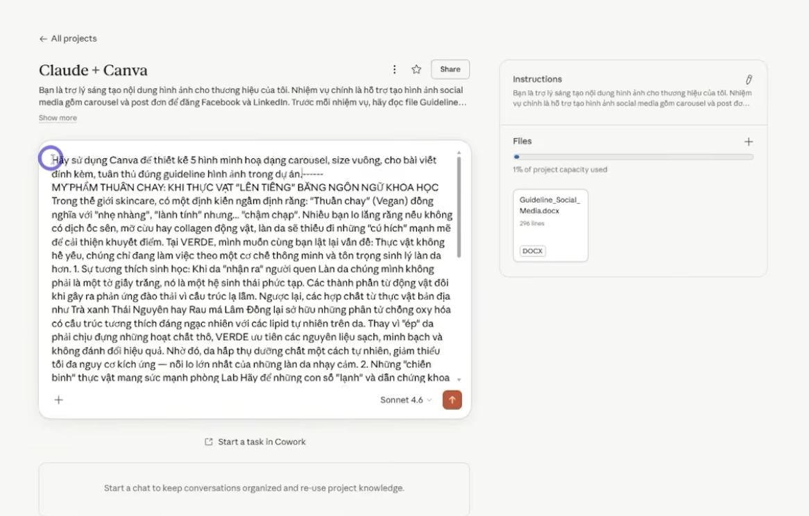
Ảnh bạn cung cấp cho thấy khu vực Instructions và Files ở bên phải, cùng ô nhập yêu cầu thiết kế ở bên trái.
Đính kèm bài viết, xác định thông điệp chính rồi yêu cầu Claude dùng Canva triển khai thiết kế theo guideline.
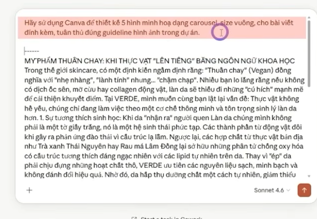
Mẫu trong ảnh yêu cầu 5 hình carousel vuông, dựa trên bài viết đính kèm.
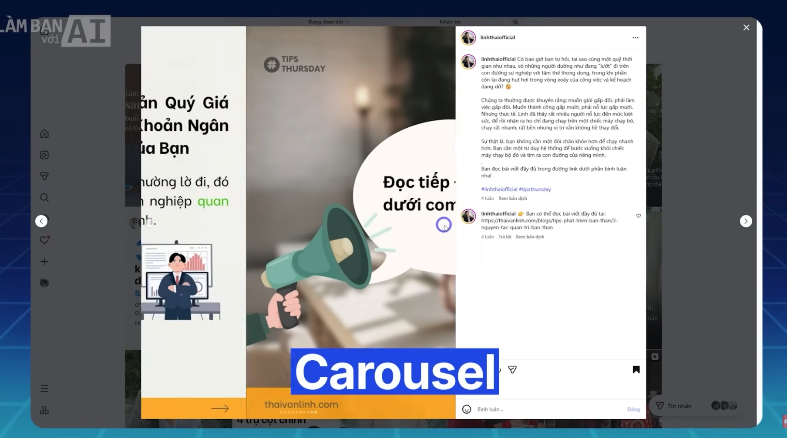
Ảnh từ video bạn cung cấp minh họa cách chia nội dung thành nhiều hình có thứ tự và kết thúc bằng lời kêu gọi hành động.
Nếu làm post đơn: đổi yêu cầu thành 1 hình, giữ một thông điệp chính và một lời kêu gọi hành động. Trước khi xuất, kiểm tra lại chính tả, font chữ, màu thương hiệu và thứ tự hình.
Từ guideline thương hiệu và yêu cầu cụ thể đến mẫu thiết kế có thể chỉnh trong Canva. Dưới đây là prompt và các ảnh chụp bạn cung cấp trong quá trình thực hiện.
Trước khi gửi, tải file Guideline_Social_Media_Website_Services.docx vào Project và chọn rõ một định dạng: post 1080 × 1350 hoặc ảnh bìa 1640 × 624.
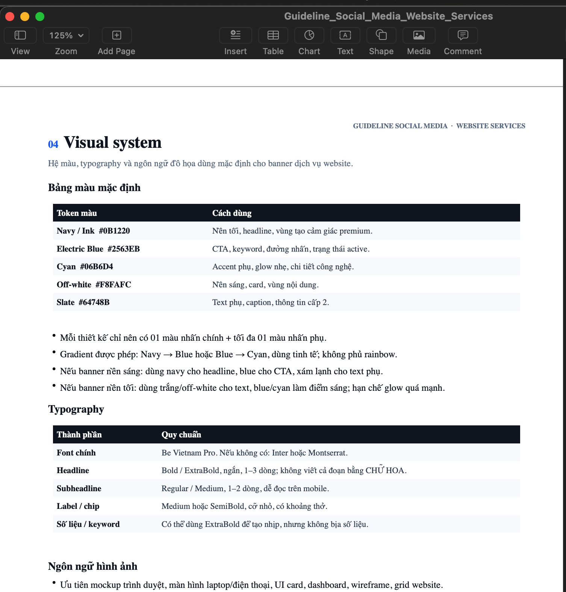
Ảnh chụp một phần guideline: bảng màu, font chữ và phong cách hình ảnh. Tải file guideline đầy đủ vào Project để dùng khi thiết kế.
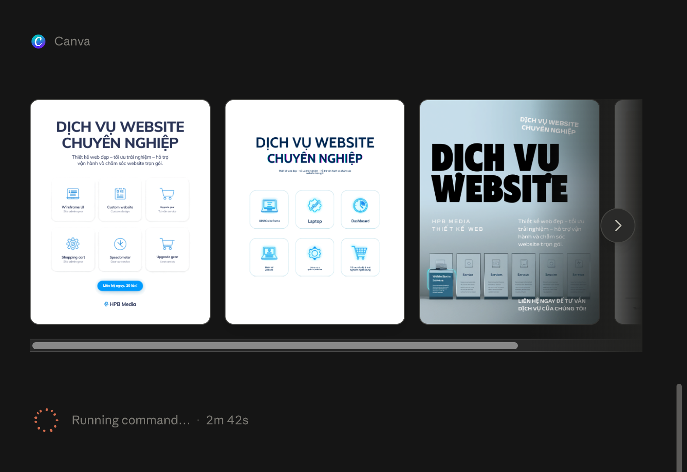
Các mẫu được đề xuất từ yêu cầu. Chọn bố cục phù hợp rồi kiểm tra lại từng nội dung dịch vụ.
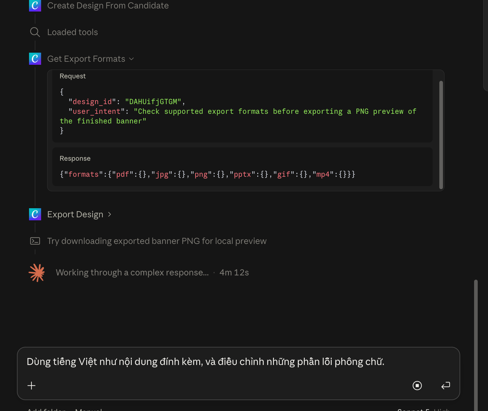
Yêu cầu dùng đúng nội dung tiếng Việt và điều chỉnh các phần lỗi phông chữ trước khi xuất.
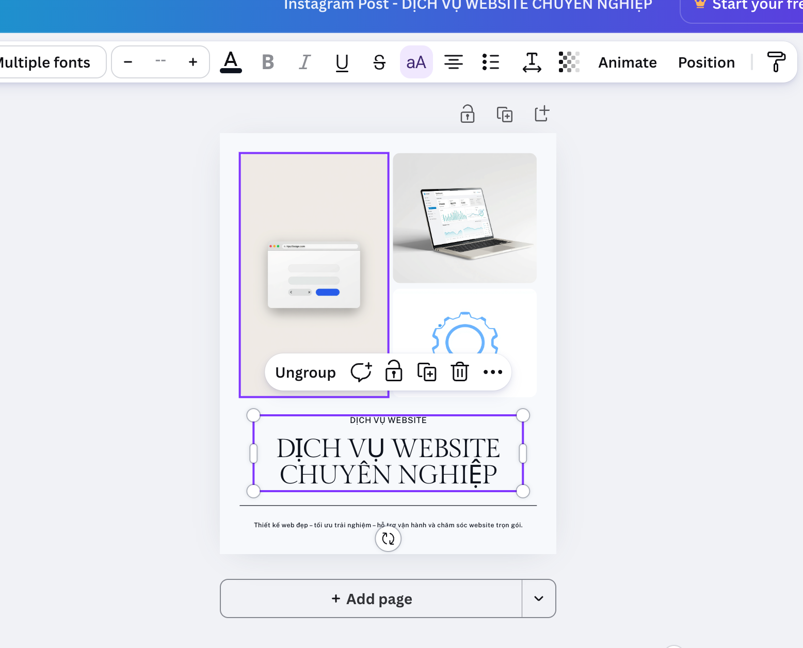
Mở thiết kế để chỉnh các thành phần, font, cỡ chữ và bố cục. Đây là ảnh một phương án trong quá trình chỉnh sửa.
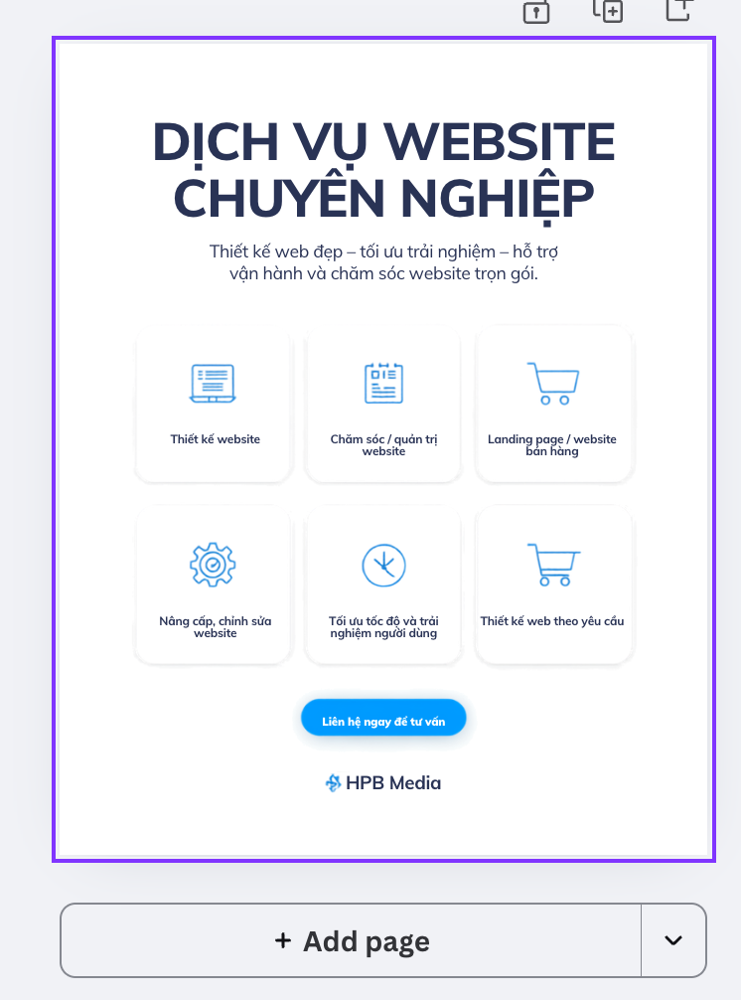
Banner gồm tiêu đề, sáu nhóm dịch vụ, lời kêu gọi liên hệ và thương hiệu HPB Media. Bấm ảnh để xem chi tiết.
Xem ví dụ đề xuất mẫu banner trong hội thoại và video hướng dẫn kết hợp Claude với Canva.
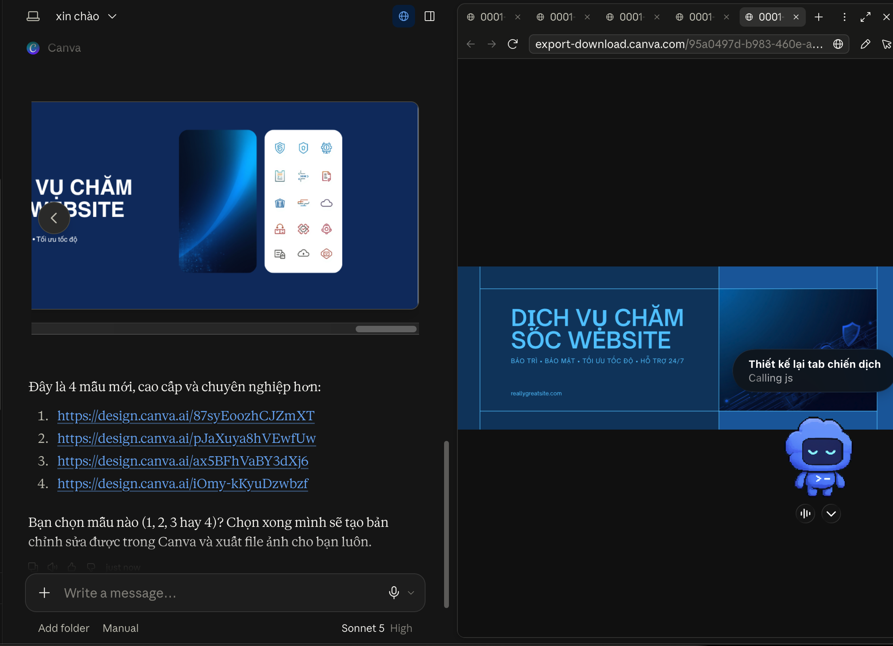
Ảnh bạn cung cấp minh họa việc đề xuất nhiều mẫu, xem trước thiết kế và chọn mẫu để tiếp tục chỉnh sửa trong Canva.
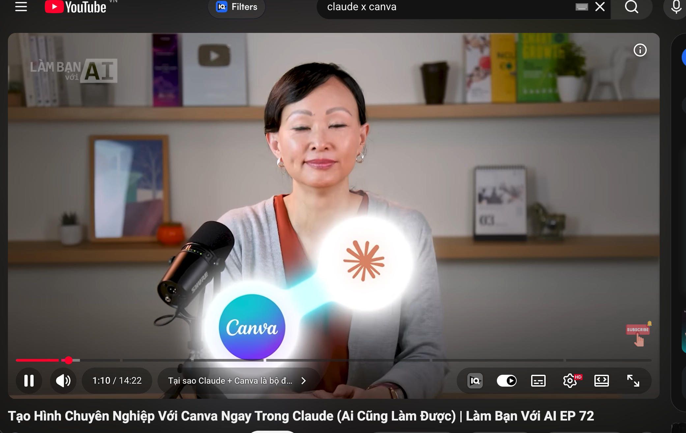
Làm Bạn Với AI · EP 72. Bấm hình hoặc nút bên dưới để xem video hướng dẫn.
▶ Xem hướng dẫn trên YouTube ↗Chuẩn bị tiêu đề, thông điệp phụ, CTA, logo và màu thương hiệu. Xác nhận kích thước theo nơi đăng.
Dùng Canva connector trong Claude và cấp quyền cho tài khoản cần dùng. Nếu chưa kết nối, dùng Claude soạn brief rồi chuyển thủ công sang Canva.
Nêu bố cục, kích thước, nội dung chính xác và ảnh cần dùng. Brand Kit có thể hỗ trợ khi tài khoản/tính năng cho phép.
Kiểm tra dấu tiếng Việt, khoảng cách, logo và độ tương phản. Giữ chữ quan trọng thành lớp chữ chỉnh được.
Tải PNG/JPG cho ảnh đăng, PDF khi cần in và kiểm tra thiết lập. Giữ link thiết kế để sửa về sau.
Tham khảo: Tài liệu chính thức về công cụ ↗. Ví dụ và quy trình thực hành do trang này biên soạn; tính năng tùy tài khoản.
Mockup là hình mô phỏng: website trên màn hình, logo trên túi hoặc thiết kế trên bao bì. Dùng để trình bày ý tưởng; bản in hoặc website thật cần tệp triển khai riêng.
Xuất ảnh website, logo hoặc nhãn đã duyệt. Chọn bản có độ nét phù hợp.
Chọn mẫu mockup trong Canva nếu có: màn hình, điện thoại, túi hoặc bao bì.
Đưa thiết kế vào vùng nhận ảnh, căn phần hiển thị và kiểm tra cắt mép.
ChatGPT/Gemini có thể tạo hình concept theo tham chiếu, nhưng có thể làm sai chữ/logo. Khi cần chính xác, ghép thiết kế gốc vào mẫu.
So sánh với bản gốc. Ghi rõ đây là mockup nếu người xem có thể nhầm là ảnh sản phẩm thực tế.
Tham khảo: Mở Canva để chọn mẫu phù hợp ↗. Ví dụ và quy trình thực hành do trang này biên soạn; tính năng tùy tài khoản.
Tạo ảnh từ mô tả hoặc tải ảnh lên để chỉnh. Thích hợp để thử bối cảnh, ánh sáng và cách trình bày trước khi chốt thiết kế.
“Gemini tạo hình nhanh hơn ChatGPT trong các lần tôi thử, nhưng kết quả chưa đẹp và chưa đúng ý mình bằng ChatGPT.”
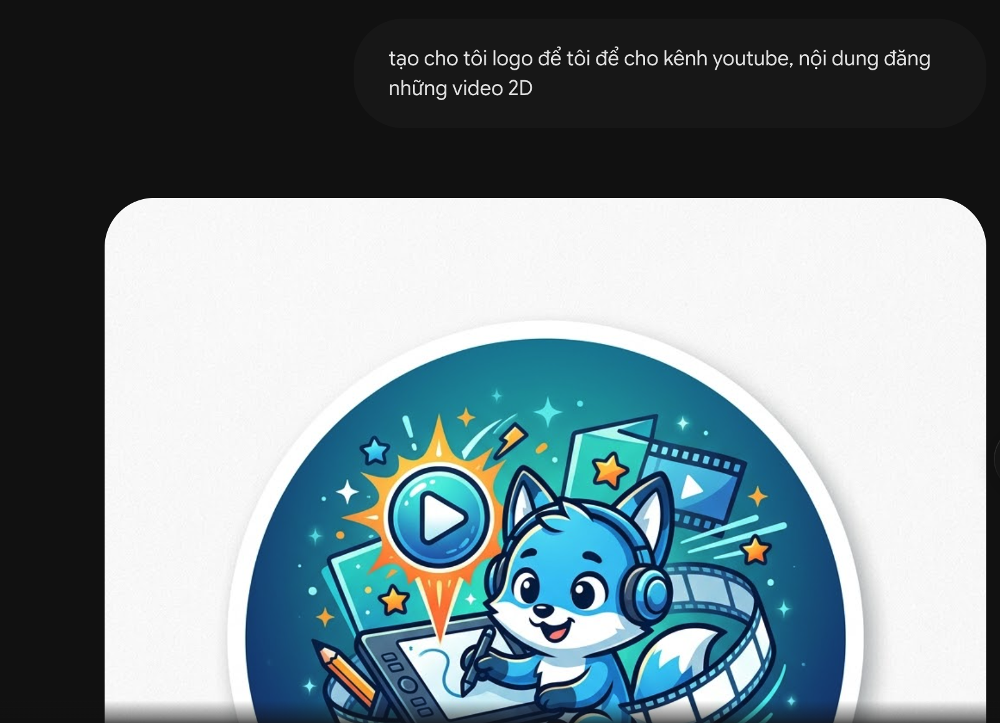
Yêu cầu trong ảnh là tạo logo cho kênh YouTube đăng video 2D. Kết quả dùng nhân vật hoạt hình và các biểu tượng liên quan đến làm video.
Nhận xét về tốc độ, độ đẹp và mức độ đúng ý là đánh giá cá nhân qua các lần thử của bạn, không phải kết quả so sánh chuẩn hóa giữa hai công cụ.
Chọn ảnh rõ, ít che khuất; xác định điều cần giữ và phần có thể thay đổi.
Trong Gemini, chọn mục tạo ảnh đang có trên tài khoản. Model và giới hạn có thể khác nhau.
Ví dụ đổi bối cảnh sang studio, làm ánh sáng mềm hơn hoặc chừa vùng đặt chữ.
Kiểm tra hình dáng, màu sắc, nhãn và chi tiết sản phẩm. Chọn bản phù hợp thông điệp.
Tải ảnh và đưa vào Canva nếu cần dàn trang. Lưu yêu cầu cùng ảnh gốc để làm bộ ảnh tiếp theo.
Tham khảo: Tài liệu chính thức về công cụ ↗. Ví dụ và quy trình thực hành do trang này biên soạn; tính năng tùy tài khoản.
Ba website để tạo hình bằng AI từ câu mô tả. Chọn một công cụ, thử cùng một yêu cầu rồi so sánh kết quả với hình bạn mong muốn.
Ảnh chụp trực tiếp các trang công khai ngày 08/09/2026, trước khi đăng nhập. Đây là giao diện website thực tế, không phải hình mô phỏng hoặc kết quả đã tạo thử. Miễn phí có hạn mức; xem điều kiện trên từng website.
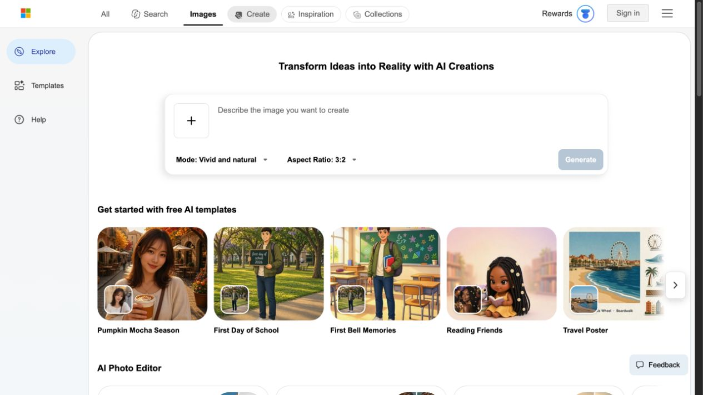
Tạo hình minh họa, ảnh ý tưởng hoặc hình nền cho bài đăng. Phù hợp để thử nhanh nhiều cách thể hiện từ cùng một nội dung.
Có lượt tạo miễn phí; tốc độ và hạn mức tùy tài khoản. Kiểm tra lượt nhanh và chế độ tạo thường trên website.
Đăng nhập tài khoản Microsoft → nhập mô tả → chọn tỉ lệ ảnh → tạo và tải bản phù hợp.
Mở Bing Image Creator ↗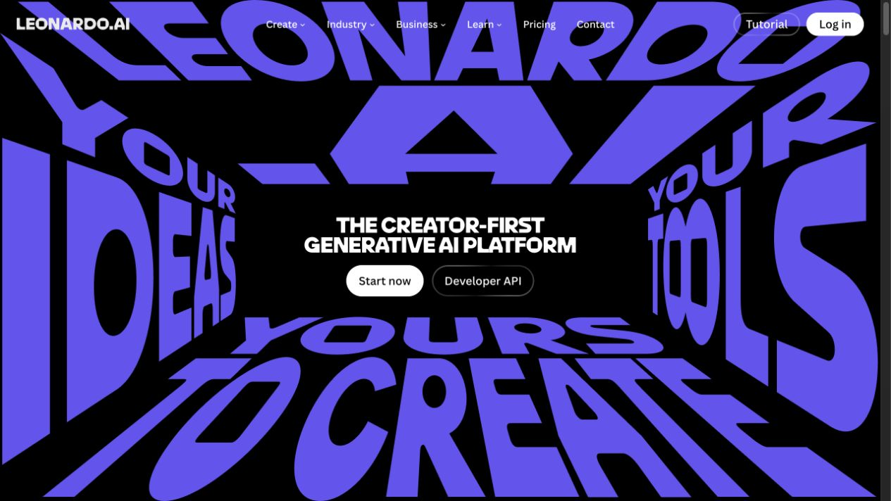
Dùng để thử hình nhân vật, minh họa và ý tưởng hình ảnh theo nhiều phong cách. Chọn model và thiết lập phù hợp trước khi tạo.
Gói miễn phí có token cấp lại hằng ngày. Mỗi lần tạo có thể tốn lượng token khác nhau; một số model và tính năng yêu cầu trả phí.
Chọn Start now → tạo tài khoản → mở công cụ tạo ảnh → chọn model khả dụng, nhập prompt và xem chi phí token trước khi chạy.
Mở Leonardo AI ↗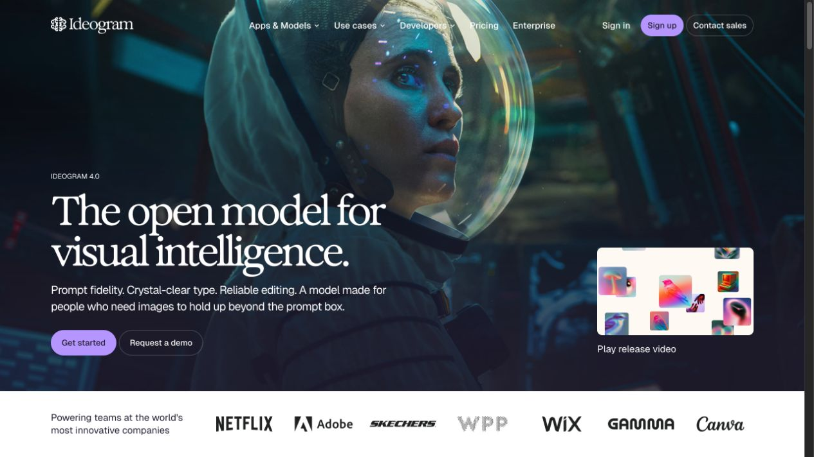
Dùng để thử poster, hình có tiêu đề hoặc ý tưởng nhận diện. Ghi chính xác nội dung chữ trong prompt và kiểm tra lại chữ tiếng Việt trên kết quả.
Có gói miễn phí với hạn mức và tính năng giới hạn. Xem trang giá để biết lượt được cấp và điều kiện hiện tại.
Chọn Get started → đăng ký hoặc đăng nhập → chọn tính năng tạo ảnh trong gói → mô tả bố cục, hình và chữ → tạo, kiểm tra rồi tải.
Mở Ideogram ↗Dùng cùng nội dung và tỉ lệ để dễ so sánh bố cục, màu sắc và độ đúng ý.
Chính tả, giá, liên hệ và thông điệp đã được duyệt.
Logo, màu sản phẩm và tỉ lệ hình không bị thay đổi ngoài ý muốn.
Lưu ảnh gốc, prompt và link Canva; phân biệt ảnh đã xuất với thiết kế còn chỉnh được.
Công cụ sinh ảnh nghệ thuật, chân dung siêu thực, thiết kế Typography, Logo & Vector SVG.
| # | CÔNG CỤ & LINK | NHÃN ĐÁNH GIÁ | ƯU ĐIỂM NỔI BẬT | NHƯỢC ĐIỂM | DEMO SẢN PHẨM |
|---|---|---|---|---|---|
| 1 | Midjourney v6.1 midjourney.com | Gu thẩm mỹ & ánh sáng điện ảnh đẹp nhất thế giới; da người và vật liệu chân thực hoàn hảo; thư viện cộng đồng khổng lồ | Không có gói miễn phí; dùng chính qua Discord hoặc giao diện web khi đạt mốc tạo ảnh | ||
| 2 | FLUX.1 (by Black Forest Labs) blackforestlabs.ai | Độ chi tiết chân thực đến từng lỗ chân lông và sợi tóc; vẽ bàn tay hoàn hảo; mã nguồn mở cho phép tự chạy trên máy tính | Bản Pro cần trả phí; bản Dev tự chạy đòi hỏi cấu hình máy tính VGA mạnh (từ 12GB VRAM) | ||
| 3 | Ideogram 2.0 ideogram.ai | Vẽ chữ và thiết kế Typography chuẩn xác 100% không bị sai chính tả; phối màu thiết kế áo thun, poster, banner cực đỉnh | Số lượt tạo ảnh miễn phí mỗi ngày có hạn | ||
| 4 | Leonardo.ai leonardo.ai | Hệ sinh thái đa năng (Canvas, Realtime Generation, Video); tặng 150 token miễn phí mỗi ngày; nhiều model chuyên biệt | Giao diện nhiều tính năng có thể làm người mới hơi rối | ||
| 5 | Stable Diffusion 3.5 / SDXL stability.ai | Mã nguồn mở miễn phí 100%; kiểm soát cấu trúc ảnh chính xác tuyệt đối qua ControlNet, LoRA; cộng đồng chia sẻ style lớn nhất | Đòi hỏi cài đặt ComfyUI / Automatic1111 và có kiến thức kỹ thuật | ||
| 6 | DALL-E 3 chatgpt.com | Tích hợp thẳng trong ChatGPT; hiểu ngôn ngữ tự nhiên và câu lệnh tiếng Việt dài xuất sắc; chỉnh sửa ảnh từng vùng dễ dàng | Thiên về phong cách minh họa/digital art hơn là ảnh chụp studio chân thực | ||
| 7 | Recraft.ai recraft.ai | Chuyên gia thiết kế đồ họa & xuất file Vector SVG không vỡ nét; tạo bộ icon 3D, minh họa đồng bộ màu thương hiệu | Không chuyên về thể loại ảnh chân dung điện ảnh | ||
| 8 | Krea AI krea.ai | Vừa vẽ nét tay vừa thấy ảnh AI sinh ra tức thì (Real-time Generator); công cụ AI Enhancer & Upscale làm nét ảnh mờ siêu đỉnh | Bản free giới hạn số lượt render hàng ngày | ||
| 9 | Adobe Firefly firefly.adobe.com | An toàn 100% về bản quyền thương mại; tích hợp trực tiếp vào Photoshop (Generative Fill); sinh hiệu ứng chữ và texture sáng tạo | Cần tài khoản Adobe Creative Cloud để dùng trọn vẹn | ||
| 10 | SeaArt.ai seaart.ai | Nền tảng sinh ảnh miễn phí thân thiện cho người mới; kho template prompt phong phú; có sẵn bộ công cụ thay trang phục, đổi mặt | Giao diện có khá nhiều thành phần hiển thị | ||
|
|
[Chủ thể chính] + [Hành động / Biểu cảm] + [Bối cảnh môi trường] + [Ánh sáng / Thời tiết] + [Góc máy & Ống kính (vd: 85mm f/1.4, cinematic lighting)] + [Phong cách nghệ thuật (vd: Photorealistic, 8k resolution)]
Công cụ lồng tiếng Text-to-Speech truyền cảm, Clone giọng nói cá nhân và sáng tác bài hát trọn vẹn bằng AI.
| # | CÔNG CỤ & LINK | NHÃN ĐÁNH GIÁ | ƯU ĐIỂM NỔI BẬT | NHƯỢC ĐIỂM | DEMO SẢN PHẨM |
|---|---|---|---|---|---|
| 1 | ElevenLabs elevenlabs.io | Chất lượng giọng đọc biểu cảm chân thực nhất thế giới; ngắt nghỉ lấy hơi như người thật; Clone giọng nói chỉ từ 1 phút audio mẫu | Bản miễn phí giới hạn 10.000 ký tự mỗi tháng | ||
| 2 | Suno AI (v3.5) suno.com | Sáng tác trọn vẹn bài hát (lời hát + ca sĩ + nhạc cụ + phối khí) chỉ từ 1 dòng mô tả; đa dạng mọi thể loại nhạc Pop, Rap, Ballad, EDM | Bản miễn phí không bao gồm quyền sở hữu thương mại | ||
| 3 | Udio udio.com | Chất lượng âm thanh chuẩn phòng thu; xử lý giọng hát solo và hòa âm bè cực kỳ tinh tế; biên tập nối đoạn bài hát mượt mà | Thời gian xử lý render một bài hát lâu hơn Suno một chút | ||
| 4 | Fish Audio fish.audio | Nền tảng Voice Clone thế hệ mới hỗ trợ tiếng Việt cực kỳ tự nhiên; độ trễ thấp; chi phí linh hoạt và dễ tiếp cận | Cộng đồng người dùng tiếng Việt đang trong giai đoạn phát triển | ||
| 5 | OpenAI TTS platform.openai.com | Chi phí qua API siêu rẻ ($0.015 / 1k ký tự); tốc độ phản hồi nhanh tức thì; các giọng đọc chuẩn mực phát âm chuẩn quốc tế | Ít tùy biến ngắt nghỉ kịch tính hơn so với ElevenLabs | ||
| 6 | Murf.ai murf.ai | Phần mềm Studio lồng tiếng chuyên nghiệp; tích hợp trình dựng video đồng bộ âm thanh; kho 120+ giọng đọc chuẩn quảng cáo | Bản dùng thử miễn phí không cho phép tải file âm thanh xuống | ||
| 7 | Lalal.ai lalal.ai | Công nghệ tách giọng ca sĩ (vocal) và nhạc nền (beat/instrumental) chuẩn xác bằng AI không để lại tạp âm | Bản miễn phí chỉ cho phép xử lý thử 10 phút audio | ||
| 8 | Soundraw.io soundraw.io | Tự động sinh nhạc nền theo độ dài và thể loại video; hoàn toàn miễn phí bản quyền khi đăng tải lên YouTube/TikTok/Facebook | Cần trả phí để xuất bản và tải file âm thanh chất lượng cao | ||
|
|
Hệ thống ứng dụng làm việc hiệu quả với AI (Obsidian, Orca, Cursor) và các nền tảng tự động hóa quy trình (n8n, Make, Dify).
| # | ỨNG DỤNG & LINK | PHÂN LOẠI / NHÃN | ỨNG DỤNG & ƯU ĐIỂM NỔI BẬT | LƯU Ý / NHƯỢC ĐIỂM | DEMO / GHI CHÚ |
|---|---|---|---|---|---|
| 1 | Obsidian obsidian.md | Bộ não thứ hai (Second Brain) lưu trữ Markdown offline 100%; liên kết 2 chiều ([[bi-directional links]]); tích hợp cực mạnh với AI qua plugin Smart Connections, Text Generator, Obsidian Copilot | Cần thời gian làm quen và tùy biến cấu hình ban đầu; đồng bộ đa thiết bị cần qua Obsidian Sync hoặc Git/iCloud | ||
| 2 | Orca (Agent Manager) orca.so / workspace | Nền tảng điều phối & quản lý nhiều AI Agent làm việc song song; quản lý ngữ cảnh và phân luồng tác vụ tập trung cho từng Workspace dự án | Đang trong giai đoạn phát triển nâng cấp tính năng mở rộng | ||
| 3 | Cursor AI / Claude Code cursor.com | Trình soạn thảo mã nguồn tích hợp AI Agent hiểu toàn bộ cấu trúc dự án (Full Codebase Indexing); tự động sinh file, debug và refactor với tốc độ gấp 10 lần | Bản miễn phí có giới hạn số lượng câu hỏi thông minh hàng tháng (Pro $20/tháng) | ||
| 4 | Raycast AI raycast.com | Trợ lý phím tắt số 1 trên Mac; gọi ChatGPT / Claude / Gemini từ bất kỳ đâu chỉ bằng 1 phím tắt; tự động hóa dịch thuật, tóm tắt và quản lý clipboard | Chủ yếu tối ưu trên macOS (bản Windows đang phát triển) | ||
| 5 | Notion AI notion.so | Không gian làm việc cộng tác đa năng; AI tự động trích xuất thông tin, điền thuộc tính bảng tính và tóm tắt cuộc họp | Dữ liệu lưu trên đám mây; phí AI tính riêng $10/tháng/người dùng | ||
| 6 | n8n n8n.io | Nền tảng tự động hóa mã nguồn mở đỉnh nhất; Self-host miễn phí không giới hạn luồng; tích hợp sẵn các Node AI Agent (LangChain) mạnh mẽ | Cần có máy chủ VPS hoặc Docker để tự vận hành (Self-host) | ||
| 7 | Make.com make.com | Giao diện kéo thả trực quan sinh động nhất; tự động hóa xuất bản đa kênh (WordPress, Facebook, Zalo, Google Sheets); xử lý JSON/Data linh hoạt | Bản miễn phí giới hạn 1.000 operation mỗi tháng | ||
| 8 | Zapier zapier.com | Hệ sinh thái kết nối lớn nhất thế giới với hơn 6.000+ app; có tính năng Zapier Central điều khiển AI Bot tự động | Chi phí các gói trả phí tương đối cao so với Make và n8n | ||
| 9 | Dify.ai dify.ai | Nền tảng kéo thả xây dựng ứng dụng AI Agent & Chatbot RAG nội bộ tra cứu tài liệu đỉnh cao; hỗ trợ nhiều LLM (OpenAI, Claude, DeepSeek) cùng lúc | Mã nguồn mở cần máy chủ đủ tài nguyên để cài đặt Docker trọn gói | ||
| 10 | Flowise AI flowiseai.com | Giao diện kéo thả No-code cho LangChain & LlamaIndex; dễ dàng kết nối Vector Database (Pinecone, Supabase, Chroma) để làm trợ lý tài liệu | Cần hiểu tư duy về Chains, Memory và Vector Store để tùy biến sâu | ||
| 11 | CrewAI crewai.com | Framework điều phối mạng lưới Đa Agent (Multi-Agent Team) xuất sắc; chia vai trò (Researcher, Writer, Reviewer) tự phối hợp giải quyết bài toán phức tạp | Chủ yếu triển khai qua mã nguồn Python / CLI, đòi hỏi nền tảng lập trình | ||
|
|
Lưu trữ toàn bộ tài liệu dự án, cấu trúc Prompt và nhật ký luồng công việc. Orca điều phối các tác vụ của Agent.
Nhận yêu cầu từ Webhook, gọi các mô hình AI (LLM, Sinh ảnh, Sinh video) và tự động xuất bản kết quả lên mạng xã hội.
Đóng vai trò trợ lý chuyên sâu từng lĩnh vực: tự động phân tích dữ liệu, viết mã nguồn và kiểm tra chất lượng sản phẩm.